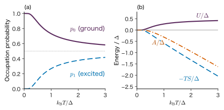
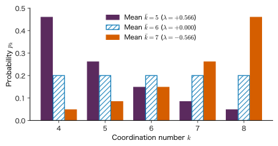
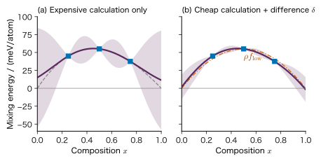

Chapter 27Connections to Materials Science and Statistical Mechanics — From the Partition Function to Machine-Learning Interatomic Potentials
- The softmax is the same formula as the Boltzmann distribution. Is the temperature used when generating text, then, really a temperature?
- To what extent are the “normalization constant,” “log marginal likelihood,” and “variational inference” of machine learning the same as the “partition function,” “free energy,” and “mean-field approximation” of statistical mechanics, and where do they differ?
- How far can we trust an interatomic potential trained on energies and forces from first-principles calculations?
In Chapter 5 we saw that maximizing the entropy with the mean energy held fixed yields the canonical distribution $p_i=e^{-\beta E_i}/Z$. The same form $e^{-(\text{something})}/Z$ appeared again and again in the softmax of Chapter 9, the Markov random field of Chapter 19, the ELBO of Chapter 20, and the Metropolis algorithm of Chapter 21. This is no accident: every probability distribution that takes positive values can be rewritten in the language of “energy” and “partition function.” Once rewritten, the computational tools that physics has refined over more than 100 years (free energy, the variational principle, the mean-field approximation, the Monte Carlo method) can be carried over to machine learning as they are. Conversely, even when the formulas are the same, the physical meaning is not necessarily the same. Doubling the temperature of a GPT does not make anything warmer.
This chapter gathers the correspondences scattered through the earlier chapters and organizes them in one place. We first build a correspondence table (Section 27.1), and then derive in turn why training an energy-based model is hard (Section 27.2), the relation between marginalization and free energy (Section 27.3), the variational free energy and the mean-field approximation of the Ising model (Section 27.4), and the general form of the principle of maximum entropy (Section 27.5). In Section 27.6 we compare in a table the similarities and differences between Boltzmann weights and the softmax. The second half concerns applications to materials science: machine-learning interatomic potentials that use first-principles calculations as training data (Section 27.7), and how to use small data, multi-fidelity data, and physical constraints (Section 27.8).
- You can tabulate the correspondence between probabilistic models and statistical mechanics (energy, partition function, free energy, ground state, sampling of equilibrium) and state the premises behind each correspondence.
- You can derive that the gradient of the log-likelihood of an energy-based model equals “the data average minus the model average,” and explain why the partition function makes training hard.
- You can show that a marginal probability can be written as a difference of free energies, prove $A[q]=\Ex_q[E]-TS[q]\ge A$ from the KL divergence, and match it term by term with the ELBO.
- You can derive the mean-field approximation of the Ising model by the variational method and solve the self-consistent equation.
- You can derive that the maximum-entropy distribution with several mean values fixed belongs to the exponential family.
- You can explain the mathematical identity and the physical differences between the Boltzmann distribution and the softmax in terms of units, equilibrium, and time evolution.
- You can explain the basic assumptions of machine-learning interatomic potentials (locality, invariance, learning from forces) and the problems of extrapolation, uncertainty, and active learning.
Sections for the introductory route: This chapter belongs to the detailed route. On the introductory route, read only Section 27.10 (Summary) and then go on to Chapter 28.
27.1 Correspondence Table — Reading Probabilistic Models in the Language of Statistical MechanicsDetailed Route
27.1.1 What we want to do
In statistical mechanics, the probability that a physical system in contact with a heat bath at temperature $T$ takes a microscopic state $x$ (an arrangement of atoms, a direction of spins, and so on) is written as
\begin{equation} \begin{aligned}p(x)&=\frac{e^{-\beta E(x)}}{Z},\\ Z&=\sum_{x}e^{-\beta E(x)},\quad \beta\equiv\frac{1}{k_{\mathrm B}T}\end{aligned} \label{eq:27-boltz} \end{equation}(the Boltzmann distribution, or canonical distribution). Here $E(x)$ is the energy of the state $x$ (in J or eV), $k_{\mathrm B}$ $=8.617\times10^{-5}\ \mathrm{eV\,K^{-1}}$ is the Boltzmann constant, and $Z$ is the partition function. There are two ways to explain why this form arises: deriving it from contact with a heat bath (Introductory University Physics, Chapter 50, Section 50.2), and deriving it from entropy maximization with the mean energy held fixed (Chapter 5, Section 5.8). The Helmholtz free energy is $A=-k_{\mathrm B}T\ln Z$ (many books write $F$).
The probability distribution $p(x)$ treated in machine learning, on the other hand, is chosen without any relation to a physical system. Even so, if $p(x)\gt0$ holds for every $x$, then using the weight $\tilde{p}(x)$ before normalization ($p(x)=\tilde{p}(x)/Z$) we can write
\begin{equation} \begin{aligned}&E(x)\equiv-\ln\tilde{p}(x)\\ &\Longrightarrow\ p(x)=\frac{e^{-E(x)}}{Z},\\ &\qquad Z=\sum_{x}\tilde{p}(x)\end{aligned} \label{eq:27-energy-def} \end{equation}This is Eq. \eqref{eq:27-boltz} with $\beta=1$, and $E(x)$ is a dimensionless “energy.” In other words, every positive distribution can be rewritten in the form of a Boltzmann distribution. Rewriting alone gives nothing new, but the names of the quantities and the methods of calculation that have been used in statistical mechanics now apply directly to the quantities of machine learning (Figure 27.1).
27.1.2 The posterior distribution has the form of a Boltzmann distribution
In the Bayesian inference of Chapter 4, the posterior distribution of the parameters $\bm{\theta}\in\R^{M}$ was $p(\bm{\theta}\mid\data)$ $=p(\data\mid\bm{\theta})\,p(\bm{\theta})/p(\data)$. Define the “energy” as a function of $\bm{\theta}$ by
\begin{equation} U(\bm{\theta})\equiv-\ln p(\data\mid\bm{\theta})-\ln p(\bm{\theta}) \label{eq:27-post-energy} \end{equation}Then the numerator is $p(\data\mid\bm{\theta})p(\bm{\theta})$ $=e^{-U(\bm{\theta})}$, and the marginal likelihood in the denominator (also called the evidence) is
$$ p(\data)=\int p(\data\mid\bm{\theta})\,p(\bm{\theta})\,\dd\bm{\theta}=\int e^{-U(\bm{\theta})}\,\dd\bm{\theta} $$Therefore
\begin{equation} \begin{aligned}p(\bm{\theta}\mid\data)&=\frac{e^{-U(\bm{\theta})}}{Z},\\ Z=p(\data),&\quad -\ln p(\data)=-\ln Z\end{aligned} \label{eq:27-post-boltz} \end{equation}The posterior distribution is “the Boltzmann distribution of the energy $U$ ($\beta=1$),” the marginal likelihood $p(\data)$ is the partition function, and the negative log marginal likelihood $-\ln p(\data)$ is the free energy (multiplied by $\beta$).
As a concrete example, consider the ridge regression of Chapter 8. Under Gaussian noise $\Normal(y_n\mid\bm{w}^{\tp}\bm{\phi}(\bm{x}_n),\sigma^{2})$ and the prior distribution $\Normal(\bm{w}\mid\bm{0},\sigma_w^{2}\bm{I})$ ($\bm{w}\in\R^{M}$), dropping constants that do not depend on $\bm{w}$ we have
$$ \begin{aligned} U(\bm{w})&=\frac{1}{2\sigma^{2}}\norm{\bm{y}-\bm{\Phi}\bm{w}}^{2}+\frac{1}{2\sigma_w^{2}}\norm{\bm{w}}^{2}+\text{constant}\\ &=\frac{1}{\sigma^{2}}\Bigl[\tfrac12\norm{\bm{y}-\bm{\Phi}\bm{w}}^{2}+\tfrac{\lambda}{2}\norm{\bm{w}}^{2}\Bigr]+\text{constant} \end{aligned} $$(with $\lambda=\sigma^{2}/\sigma_w^{2}$ and $\bm{\Phi}\in\R^{N\times M}$). The expression in the square brackets is exactly the ridge loss $L(\bm{w})$. That is, the posterior distribution is $p(\bm{w}\mid\data)\propto e^{-L(\bm{w})/\sigma^{2}}$, and the noise variance $\sigma^{2}$ plays the role of the temperature. The smaller the noise (the “colder” the system), the more the posterior distribution concentrates near the minimum of the loss (the MAP estimate).
27.1.3 The correspondence table
The correspondences that have appeared in the earlier chapters of this book are summarized in Table 27.1. The rightmost column shows where in this book the correspondence was used, or in which section of this chapter it is treated in detail.
| Machine learning and statistics | Statistical mechanics | Where in this book |
|---|---|---|
| $-\ln\tilde{p}(x)$ (negative log-likelihood, loss) | $\beta E(x)$ (energy × $\beta$) | Eq. \eqref{eq:27-energy-def} |
| Normalization constant $Z=\sum_x\tilde{p}(x)$ | Partition function $Z=\sum_xe^{-\beta E(x)}$ | Chapter 19, Section 19.5; Section 27.2 |
| Marginal likelihood $p(\data)$, negative log marginal likelihood $-\ln p(\data)$ | Partition function, $\beta A=-\ln Z$ | Eq. \eqref{eq:27-post-boltz} |
| Marginalization over latent variables $\sum_z$ | Partial partition function, difference of free energies | Section 27.3 |
| Approximate distribution $q$ and ELBO | Trial distribution and variational free energy $A[q]$ ($\ELBO=-\beta A[q]$) | Chapter 20, Section 20.8; Section 27.4 |
| Mean-field approximation (variational inference) | Mean-field theory | Section 27.4 |
| Constrained entropy maximization → exponential family | Canonical distribution (constraint on the mean energy) | Chapter 5, Section 5.8; Section 27.5 |
| Softmax logit $o_i$, temperature $\tau$ | $-E_i$, $k_{\mathrm B}T$ | Chapter 9, Section 9.5; Section 27.6 |
| MAP estimation (minimum of the loss) | Ground state ($T\to0$) | Section 27.1.4 |
| Sampling from the posterior distribution (MCMC) | Sampling of thermal-equilibrium states (Metropolis algorithm) | Chapter 21, Section 21.11 |
| Second derivative of the log probability (Fisher information, etc.) | Fluctuations (specific heat, susceptibility) | Section 27.2 |
Notation: Symbols Used in This Chapter
$\beta=1/(k_{\mathrm B}T)$ is the inverse temperature of statistical mechanics, and it is a different quantity from the Adam coefficients $\beta_1,\beta_2$ of Chapter 7. On the machine learning side we set $\beta=1$ and treat the energy as dimensionless. The free energy is $A$, the thermodynamic entropy is $S$ (in units of $\mathrm{J\,K^{-1}}$ or $\mathrm{eV\,K^{-1}}$), and the Shannon entropy is $H$ (in nat); they are related by $S=k_{\mathrm B}H$ (Chapter 5, Section 5.8). The spin $s_i$, the external-field term $h$, and the exchange interaction $J$ in Section 27.4 are the same symbols as in Chapter 19, Section 19.5 ($h$ is distinct from the activation function $h(\cdot)$). The undetermined multipliers $\lambda_k$ in Section 27.5 are written with a subscript to distinguish them from the regularization coefficient $\lambda$.
Illustration 27.1: Marginal likelihood of a success rate under a uniform prior
Place the uniform prior $p(\mu)=1$ on the success rate $\mu\in[0,1]$, and suppose we observe three successes in three trials. Since $U(\mu)=-\ln\mu^{3}=-3\ln\mu$, the partition function is $Z$ $=\int_0^1e^{-U}\dd\mu$ $=\int_0^1\mu^{3}\dd\mu$ $=1/4$, and the negative log marginal likelihood is $-\ln Z=\ln4\approx1.386$. The “ground state,” where $U$ is minimal, is $\mu=1$ (the MAP estimate), but the mean of the posterior distribution $4\mu^{3}$ is $4/5$; looking only at the ground state loses the information about the width.
27.1.4 Changing the temperature — MAP, the posterior distribution, and annealing
Consider the distribution $p_\beta(\bm{\theta})\propto e^{-\beta U(\bm{\theta})}$ obtained by reinserting the inverse temperature $\beta$ into Eq. \eqref{eq:27-post-boltz}. Several methods then line up along a single axis.
- $\beta=1$: the Bayesian posterior distribution itself.
- $\beta\to\infty$ (the low-temperature limit): $e^{-\beta U}$ becomes relatively 0 everywhere except at the minimum of $U$, and the distribution concentrates on the MAP estimate. In physics this corresponds to the ground state.
- $\beta\to0$ (the high-temperature limit): since $e^{-\beta U}\to1$, the distribution approaches the uniform one (provided that the range of $\bm{\theta}$ is bounded).
The method of continuing to sample while increasing $\beta$ little by little and finally locating the minimum is simulated annealing (Kirkpatrick, Gelatt & Vecchi 1983). It is named by analogy with the fact that a metal cooled slowly settles into a state with few defects. Together with the replica exchange method, which lines up chains with different $\beta$ and swaps their states, sampling methods are treated in Chapter 21, Section 21.10–21.11. In this chapter we do not go into sampling algorithms, and concentrate instead on organizing, in a common language, what is being sampled from (a distribution of the form $e^{-\beta E}$).
Example 27.1: Reading the logits of three classes as energies
A classifier outputs the logits $\bm{o}=(2.0,\ 1.0,\ -0.5)$ for three classes. Form the probabilities $p_i=e^{o_i}/\sum_je^{o_j}$ with the softmax. (1) Find $p_i$. (2) Regarding $E_i\equiv-o_i$ as the “energy,” find the partition function $Z$ and the “free energy” $A=-\ln Z$ ($\beta=1$), and verify that $-\ln p_i=E_i-A$. (3) How do $p_i$ and $A$ change if 10 is added to every logit?
Solution. (1) The weights are $e^{2.0}=7.3891$, $e^{1.0}=2.7183$, $e^{-0.5}=0.6065$. Their sum is $Z=7.3891+2.7183+0.6065=10.7139$. Hence $p_1=7.3891/10.7139=0.6897$, $p_2=2.7183/10.7139=0.2537$, $p_3=0.6065/10.7139=0.0566$.
(2) $Z=10.7139$ is exactly the sum in (1), and $A=-\ln10.7139=-2.3715$. We have $-\ln p_1=-\ln0.6897=0.3715$, which agrees with $E_1-A=-2.0+2.3715=0.3715$. Similarly, $-\ln p_2=1.3715=-1.0+2.3715$ and $-\ln p_3=2.8715=0.5+2.3715$. That is, “the negative logarithm of a probability is the difference between the energy of that state and the free energy.”
(3) All the weights are multiplied by $e^{10}$, and $Z$ is also multiplied by $e^{10}$, so the ratios $p_i$ do not change. On the other hand, $A=-\ln(e^{10}Z)=-10-2.3715=-12.3715$ decreases by exactly 10. Shifting the baseline (origin) of the energy does not change the probabilities, and the free energy shifts by the same amount. This is the same as the fact that in physics the origin of the energy can be chosen freely.
27.2 Energy-Based Models — The Partition Function Makes Learning HardDetailed Route
27.2.1 Definition
Eq. \eqref{eq:27-energy-def} can be used in reverse: there is a method in which we model the function of the energy first and define the probability as its consequence.
Definition 27.1: Energy-based model
Using a real-valued function $E_{\bm{\theta}}(x)$ (the energy function) with parameters $\bm{\theta}\in\R^{M}$, a probabilistic model defined by
\begin{equation} \begin{aligned}p_{\bm{\theta}}(x)&=\frac{e^{-E_{\bm{\theta}}(x)}}{Z_{\bm{\theta}}},\\ Z_{\bm{\theta}}&=\sum_{x}e^{-E_{\bm{\theta}}(x)}\end{aligned} \label{eq:27-ebm} \end{equation}is called an energy-based model. If $x$ is continuous, replace the sum by an integral (the integral must be finite).
The energy function can be built freely, without worrying about normalization. It may even be a neural network. This is the advantage. The price is that $Z_{\bm{\theta}}$ is needed, both to compute the value of a probability and to train the model. If $x$ consists of $n$ binary variables, $Z_{\bm{\theta}}$ is a sum of $2^{n}$ terms, and for $n=100$ it has $2^{100}\approx1.3\times10^{30}$ terms.
We give two historically important examples.
- Hopfield network (Hopfield 1982): To $n$ binary units $s_i\in\{+1,-1\}$ we assign the energy $E(\bm{s})$ $=-\tfrac12\sum_{i\ne j}w_{ij}s_is_j-\sum_ib_is_i$ ($w_{ij}=w_{ji}$). If we update the units one at a time in the “direction in which the energy decreases,” the state settles into a local minimum. If we choose $w_{ij}$ so that the patterns we want to store are minima, the network works as an associative memory that recalls the whole pattern from a partially missing one. The form is the same as the Ising model in Chapter 19, Section 19.5.
- Boltzmann machine (Ackley, Hinton & Sejnowski 1985): With an energy of the same form, instead of updating the state deterministically, we sample stochastically from the Boltzmann distribution \eqref{eq:27-ebm}. Adding hidden units that are not observed makes it possible to represent complex distributions. The restricted Boltzmann machine, in which the couplings among hidden units and among observed units are removed, was widely used together with an approximate learning method (contrastive divergence; Hinton 2002).
27.2.2 Gradient of the log-likelihood — the data average and the model average
For data $\data=\{x_n\}_{n=1}^{N}$ (i.i.d.), we find the gradient of the average log-likelihood $\ell(\bm{\theta})$ $=\frac1N\sum_n\ln p_{\bm{\theta}}(x_n)$.
Derivation: Gradient of the log-likelihood of an energy-based model
Taking the logarithm of Eq. \eqref{eq:27-ebm} gives $\ln p_{\bm{\theta}}(x)$ $=-E_{\bm{\theta}}(x)-\ln Z_{\bm{\theta}}$. Differentiating with respect to $\bm{\theta}$,
$$ \pdiff{}{\bm{\theta}}\ln p_{\bm{\theta}}(x)=-\pdiff{E_{\bm{\theta}}(x)}{\bm{\theta}}-\pdiff{\ln Z_{\bm{\theta}}}{\bm{\theta}} . $$We compute the second term. By differentiating $\ln$ and differentiating the sum term by term,
$$ \begin{aligned} \pdiff{\ln Z_{\bm{\theta}}}{\bm{\theta}} &=\frac{1}{Z_{\bm{\theta}}}\pdiff{Z_{\bm{\theta}}}{\bm{\theta}}\\ &=\frac{1}{Z_{\bm{\theta}}}\sum_{x'}\pdiff{}{\bm{\theta}}e^{-E_{\bm{\theta}}(x')}\\ &=\frac{1}{Z_{\bm{\theta}}}\sum_{x'}\Bigl(-\pdiff{E_{\bm{\theta}}(x')}{\bm{\theta}}\Bigr)e^{-E_{\bm{\theta}}(x')}\\ &=-\sum_{x'}p_{\bm{\theta}}(x')\pdiff{E_{\bm{\theta}}(x')}{\bm{\theta}}\\ &=-\Ex_{p_{\bm{\theta}}}\Bigl[\pdiff{E_{\bm{\theta}}}{\bm{\theta}}\Bigr]. \end{aligned} $$In the third line we used $e^{-E_{\bm{\theta}}(x')}/Z_{\bm{\theta}}$ $=p_{\bm{\theta}}(x')$. Substituting this and averaging over $n$, we obtain the following equation.
∎
The first term acts in the direction that lowers the energy at the data points (raising the probability where the data are), and the second acts in the direction that raises the energy where the model currently places probability (lowering the probability where there are no data). When the two averages agree, the gradient is 0. The hard part is the second term: the expectation with respect to the model distribution $p_{\bm{\theta}}$ requires $Z_{\bm{\theta}}$. In practice we approximate it by drawing samples from the model with the MCMC of Chapter 21, but MCMC must be run at every learning step, and if the samples do not mix fully, the gradient becomes biased. This is why training Boltzmann machines was so costly.
27.2.3 When the energy is linear in the parameters — moment matching and convexity
In particular, consider the case where we use a feature $\bm{f}(x)\in\R^{M}$ and write the energy as $E_{\bm{\theta}}(x)$ $=-\bm{\theta}^{\tp}\bm{f}(x)$ ($p_{\bm{\theta}}(x)\propto\exp(\bm{\theta}^{\tp}\bm{f}(x))$ is the exponential family of Chapter 3, Section 3.11, in which $\bm{\theta}$ is the natural parameter and $\bm{f}$ corresponds to the sufficient statistic). Since $\partial E/\partial\bm{\theta}$ $=-\bm{f}(x)$, Eq. \eqref{eq:27-ebm-grad} becomes
\begin{equation} \pdiff{\ell}{\bm{\theta}}=\frac1N\sum_{n=1}^{N}\bm{f}(x_n)-\Ex_{p_{\bm{\theta}}}[\bm{f}] \label{eq:27-moment} \end{equation}At the maximum likelihood solution the gradient is 0, so the expectation of the model's features agrees with the data average (moment matching). We now compute the second derivative. Differentiating $\Ex_{p_{\bm{\theta}}}[\bm{f}]$ $=\sum_xp_{\bm{\theta}}(x)\bm{f}(x)$ with respect to $\bm{\theta}^{\tp}$ and using $\partial p_{\bm{\theta}}(x)/\partial\bm{\theta}^{\tp}$ $=p_{\bm{\theta}}(x)\bigl(\bm{f}(x)-\Ex[\bm{f}]\bigr)^{\tp}$ (the same calculation as in the derivation above), we get
$$ \begin{aligned}\frac{\partial^{2}\ell}{\partial\bm{\theta}\,\partial\bm{\theta}^{\tp}}&=-\sum_xp_{\bm{\theta}}(x)\,\bm{f}(x)\bigl(\bm{f}(x)-\Ex[\bm{f}]\bigr)^{\tp}\\ &=-\Cov_{p_{\bm{\theta}}}[\bm{f}]\end{aligned} $$(the covariance matrix is the expectation of $\bm{f}\bm{f}^{\tp}$ minus $\Ex[\bm{f}]\Ex[\bm{f}]^{\tp}$). Since the covariance matrix is positive semidefinite (Chapter 2, Section 2.5), the negative log-likelihood $-\ell$ is a convex function of $\bm{\theta}$, and there is no need to worry about local minima (Chapter 7, Section 7.4).
Application: Specific heat is energy fluctuation
We carry out the same calculation in statistical mechanics. Replacing $\bm{\theta}$ by $-\beta$ and $\bm{f}$ by $E$, for $\ln Z(\beta)$ $=\ln\sum_xe^{-\beta E(x)}$ the following hold:
$$ -\diff{\ln Z}{\beta}=\Ex[E]\equiv U, $$ $$ \frac{\dd^{2}\ln Z}{\dd\beta^{2}}=\Var[E] $$Using $\dd\beta/\dd T$ $=-1/(k_{\mathrm B}T^{2})$, the specific heat becomes $C$ $=\dd U/\dd T$ $=\Var[E]/(k_{\mathrm B}T^{2})$, which is written in terms of the fluctuation (variance) of the energy (Introductory University Physics, Chapter 50, Section 50.5). In machine learning, “the curvature of the log-likelihood is determined by the variance of the features,” and in physics, “the response (specific heat, magnetic susceptibility) is determined by fluctuations.” These are two readings of the same equation.
Example 27.2: Training a one-parameter energy-based model for one step
We counted the number of vacancies $x\in\{0,1,2,3\}$ in each of 10 small crystal grains: 0 vacancies in 4 grains, 1 in 3 grains, 2 in 2 grains, and 3 in 1 grain (synthetic data for teaching purposes; no random numbers were used, and the numbers were chosen by hand for explanation). Let the model be $E_\theta(x)=-\theta x$, that is, $p_\theta(x)=e^{\theta x}/Z_\theta$. (1) Find the average log-likelihood $\ell$ and the gradient at $\theta=0$. (2) Perform one step of gradient ascent with learning rate $\eta=0.5$, and find the model average at the new $\theta$. (3) Write the equation satisfied by the maximum likelihood estimate $\hat\theta$, and solve it numerically.
Solution. The sum of the data values is $0\times4+1\times3+2\times2+3\times1$ $=10$, so the data average is $\bar{x}=10/10=1.0$.
(1) Since $\ln p_\theta(x)$ $=\theta x-\ln Z_\theta$, we have $\ell(\theta)$ $=\theta\bar{x}-\ln Z_\theta$. At $\theta=0$ the four states are equally probable, $Z_0=4$, and $\ell(0)=-\ln4=-1.3863$. By Eq. \eqref{eq:27-moment}, the gradient is $\bar{x}-\Ex_{p_0}[x]$ $=1.0-(0+1+2+3)/4$ $=1.0-1.5$ $=-0.5$. Because the model average is larger than the data, the direction is the one that lowers $\theta$.
(2) $\theta_1=0+0.5\times(-0.5)=-0.25$. The weights $e^{-0.25x}$ for $x=0,1,2,3$ are $1,\ 0.7788,\ 0.6065,\ 0.4724$, with sum $Z=2.8577$. The probabilities are $0.3499,\ 0.2725,\ 0.2122,\ 0.1653$, and the model average is $0.2725+2\times0.2122+3\times0.1653$ $=1.1929$. It has moved closer to the data average 1.0. $\ell(\theta_1)$ $=-0.25\times1.0-\ln2.8577$ $=-0.25-1.0500$ $=-1.3000$, which is larger than in (1).
(3) The condition that the gradient be 0 is $\Ex_{p_{\hat\theta}}[x]=\bar{x}=1.0$, that is,
$$ \frac{e^{\hat\theta}+2e^{2\hat\theta}+3e^{3\hat\theta}}{1+e^{\hat\theta}+e^{2\hat\theta}+e^{3\hat\theta}}=1.0 . $$Let $r=e^{\hat\theta}$ and clear the denominator to get $r+2r^{2}+3r^{3}=1+r+r^{2}+r^{3}$, which simplifies to $2r^{3}+r^{2}-1=0$. The positive real solution is $r=0.6573$ ($2\times0.2840+0.4320-1=0.000$), so $\hat\theta=\ln0.6573=-0.4196$. The probabilities are then $0.4214,\ 0.2770,\ 0.1820,\ 0.1197$, and $\ell(\hat\theta)=-1.2839$. In this simple example $Z$ is a sum of only four terms, so it could be computed exactly; but if there were $2^{100}$ states, the model average could only be estimated by MCMC.
27.3 Inference and Free Energy — Marginalization Is a Partial Partition FunctionDetailed Route
27.3.1 Writing marginalization and conditioning with the partition function
Write the joint distribution of an observed variable $x$ and an unobserved variable $z$ (a latent variable) in terms of an energy $E(x,z)$ as $p(x,z)=e^{-E(x,z)}/Z$, $Z=\sum_{x,z}e^{-E(x,z)}$. The quantity obtained by fixing $x$ and summing over $z$ only,
\begin{equation} Z(x)\equiv\sum_{z}e^{-E(x,z)} \label{eq:27-partial-Z} \end{equation}will be called the partial partition function (note that $\sum_xZ(x)=Z$). Then the marginal distribution and the conditional distribution are
\begin{equation} \begin{aligned}p(x)&=\sum_zp(x,z)=\frac{Z(x)}{Z},\\ p(z\mid x)&=\frac{p(x,z)}{p(x)}=\frac{e^{-E(x,z)}}{Z(x)}\end{aligned} \label{eq:27-marg} \end{equation}If we define the corresponding “free energies” by $A=-\ln Z$ and $A(x)=-\ln Z(x)$ (with $\beta=1$), then
$$ -\ln p(x)=A(x)-A $$holds. The negative logarithm of a marginal probability is the difference between the free energy of the system with $x$ fixed and the free energy of the system in which it is not fixed. The conditional distribution $p(z\mid x)$ is the Boltzmann distribution of the “subsystem” with $x$ fixed, and its partition function is $Z(x)$.
This idea is also widely used in physics. For example, in a magnet, if we form $Z(m)$ by summing only over the microscopic states whose mean magnetization over all spins is $m$, the distribution of the magnetization becomes $p(m)=Z(m)/Z\propto e^{-\beta A(m)}$. The graph of $A(m)$ as a function of $m$ is the free-energy curve used in discussions of phase transitions (Figure 27.3(a) in Section 27.4 is its mean-field approximation). The machine-learning operation of “marginalizing out latent variables to build the likelihood of the observations” (the mixture distributions of Chapter 17, the hidden Markov models of Chapter 22) is the same as the physical operation of “summing over the degrees of freedom we do not care about to build a free energy.” The message passing (sum-product) of Chapter 19, Section 19.7 corresponds, in physics, to the transfer-matrix method, which computes the partition function of a one-dimensional lattice as a product of matrices.
27.3.2 The simplest example — a two-level system
Consider a system with only two states, of energies $0$ and $\Delta\gt0$ (a two-level system). Examples are a defect in a crystal that takes one of two configurations, and an electron spin in a magnetic field (Introductory University Physics, Chapter 51, Section 51.3). The partition function and the other quantities are
\begin{equation} \begin{aligned}Z&=1+e^{-\beta\Delta},\\ p_1&=\frac{e^{-\beta\Delta}}{1+e^{-\beta\Delta}},\\ A&=-k_{\mathrm B}T\ln\bigl(1+e^{-\beta\Delta}\bigr)\end{aligned} \label{eq:27-twolevel} \end{equation}($p_1$ is the probability of being in the upper level). The mean energy is $U=\Delta p_1$, and the entropy follows from $S=(U-A)/T$. Figure 27.2 plots these as functions of $k_{\mathrm B}T/\Delta$. At low temperature the system is in the ground state and $A\approx U\approx0$; at high temperature the two states approach equal probability, and $-TS\to-k_{\mathrm B}T\ln2$ lowers $A$. $A=U-TS$ expresses, in a single number, the balance between “wanting to lower the energy” and “wanting to gain more states (to raise the entropy).”

We obtained $U$ from the derivative of $\ln Z$: $U=-\partial\ln Z/\partial\beta$. In machine learning, too, differentiating $\ln Z_{\bm{\theta}}$ with respect to the parameters produced the expectation under the model (Section 27.2). If the (logarithm of the) partition function can be computed, every expectation is obtained as its derivative. That is exactly why the impossibility of computing the partition function is a difficulty shared by statistical mechanics and machine learning.
Example 27.3: Finding the marginal probability of two spins from a difference of free energies
Let the energy of two spins $s_1,s_2\in\{+1,-1\}$ be $E=-Js_1s_2-h(s_1+s_2)$, with $\beta J=1$ and $\beta h=0.5$. (1) Find the weights $e^{-\beta E}$ of the four states and $Z$. (2) Find the partial partition functions $Z(s_1=+1)$ and $Z(s_1=-1)$, and then the marginal probability $p(s_1=+1)$ and $\beta A(s_1=+1)-\beta A$. (3) Find $\langle s_1\rangle$ ($\Ex[s_1]$) and verify that it agrees with $\tfrac12\,\partial\ln Z/\partial(\beta h)$. (4) Find $p(s_2=+1\mid s_1=+1)$ and $p(s_2=+1\mid s_1=-1)$, and show that the two spins are not independent.
Solution. (1) Since $-\beta E$ $=\beta Js_1s_2+\beta h(s_1+s_2)$,
$$ \begin{aligned} (+,+)&:\ e^{1+1}=e^{2}=7.3891,\\ (+,-),(-,+)&:\ e^{-1+0}=0.3679,\\ (-,-)&:\ e^{1-1}=e^{0}=1 . \end{aligned} $$$Z=7.3891+2\times0.3679+1=9.1248$.
(2) $Z(s_1=+1)=7.3891+0.3679=7.7569$ and $Z(s_1=-1)=0.3679+1=1.3679$ (their sum agrees with $Z$). $p(s_1=+1)=7.7569/9.1248=0.8501$. $\beta A(s_1$ $=+1)-\beta A$ $=-\ln7.7569+\ln9.1248$ $=-2.0486+2.2110$ $=0.1624$, which agrees with $-\ln0.8501=0.1624$.
(3) $\langle s_1\rangle$ $=(+1)\times0.8501+(-1)\times(1.3679/9.1248)$ $=0.8501-0.1499$ $=0.7002$. On the other hand, when $\ln Z$ is differentiated with respect to $\beta h$, the factor $(s_1+s_2)$ comes down from the exponent $\beta h(s_1+s_2)$ of each term, so $\partial\ln Z/\partial(\beta h)$ $=\langle s_1+s_2\rangle$ $=2\langle s_1\rangle$ (by symmetry, $\langle s_1\rangle$ $=\langle s_2\rangle$). Hence $\tfrac12\,\partial\ln Z/\partial(\beta h)$ $=0.7002$, which agrees.
(4) By Eq. \eqref{eq:27-marg}, given $s_1=+1$ we have $p(s_2=+1\mid s_1=+1)$ $=7.3891/7.7569=0.9526$, and given $s_1=-1$ we have $p(s_2=+1\mid s_1=-1)$ $=0.3679/1.3679=0.2689$. The values differ greatly depending on the condition, so $s_1$ and $s_2$ are not independent (because of the ferromagnetic coupling $J\gt0$, they tend to align).
27.4 Variational Free Energy and Variational Inference — The Mean-Field ApproximationDetailed Route
27.4.1 The Gibbs–Bogoliubov inequality
When the partition function cannot be computed, statistical mechanics uses a variational method: “approximate by a distribution $q$ that we can compute, and choose the best one among them.” Its foundation is the following inequality (we also derived it in Chapter 20, Section 20.8; here we restate the proof in the notation of this chapter and then proceed to the mean-field approximation of the Ising model).
Definition 27.2: Variational free energy
For any probability distribution $q(x)$ over the states $x$, the quantity
\begin{equation} \begin{aligned}A[q]&\equiv\Ex_q[E]-TS[q],\\ S[q]&=-k_{\mathrm B}\,\Ex_q[\ln q]\end{aligned} \label{eq:27-varfree} \end{equation}is called the variational free energy of $q$ ($S[q]=-k_{\mathrm B}\sum_xq(x)\ln q(x)$ is the Gibbs entropy of $q$). When $q$ equals the Boltzmann distribution $p$ (Eq. \eqref{eq:27-boltz}), $A[p]$ coincides with the ordinary free energy $A=-k_{\mathrm B}T\ln Z$.
Theorem 27.1: Gibbs–Bogoliubov inequality (variational principle)
For any distribution $q$, $A[q]\ge A$ holds, with equality only when $q=p$. The difference can be written in terms of the KL divergence as $A[q]-A$ $=k_{\mathrm B}T\,\KL(q\,\|\,p)$.
Proof
We start from the definition of the KL divergence (Chapter 5, Section 5.4).
$$ \begin{aligned}\KL(q\,\|\,p)&=\sum_xq(x)\ln q(x)\\ &\quad-\sum_xq(x)\ln p(x).\end{aligned} $$By the definition of $S[q]$, the first term is $-S[q]/k_{\mathrm B}$. In the second term we substitute $\ln p(x)=-\beta E(x)-\ln Z$ and use $\sum_xq(x)=1$.
$$ \begin{aligned} -\sum_xq(x)\ln p(x)&=\sum_xq(x)\bigl(\beta E(x)\\ &\qquad\qquad+\ln Z\bigr)\\ &=\beta\,\Ex_q[E]+\ln Z . \end{aligned} $$Hence $\KL(q\,\|\,p)$ $=-S[q]/k_{\mathrm B}+\beta\,\Ex_q[E]+\ln Z$. Multiplying both sides by $k_{\mathrm B}T=1/\beta$ gives
$$ \begin{aligned} k_{\mathrm B}T\,\KL(q\,\|\,p)&=\Ex_q[E]-TS[q]\\ &\quad+k_{\mathrm B}T\ln Z\\ &=A[q]-A . \end{aligned} $$In the last line we used $A=-k_{\mathrm B}T\ln Z$. Since $\KL\ge0$, with equality only when $q=p$ (Chapter 5, Section 5.4), the theorem holds.
∎
From this inequality, the strategy for approximation follows at once. If we minimize $A[q]$ over a family $\mathcal{Q}$ of distributions that are easy to compute, the minimizer is the $q$ that minimizes $\KL(q\,\|\,p)$, and the minimum value $A[q^{*}]$ is an upper bound on the true $A$.
27.4.2 Correspondence with the ELBO
The variational inference of Chapter 20 approximated the posterior distribution $p(\bm{\theta}\mid\data)$ by $q(\bm{\theta})$ and maximized the ELBO. Applying the correspondence of Section 27.1.2 ($\beta=1$, energy $U(\bm{\theta})$ $=-\ln p(\data,\bm{\theta})$, $Z=p(\data)$), the two sides agree term by term, as in the following table.
| Variational inference (Chapter 20) | Statistical mechanics |
|---|---|
| Joint distribution $p(\data,\bm{\theta})$ | Boltzmann weight $e^{-U(\bm{\theta})}$ |
| Marginal likelihood $p(\data)$ | Partition function $Z$ |
| $-\ln p(\data)$ | Free energy $A$ |
| $\Ex_q[\ln p(\data,\bm{\theta})]$ | $-\Ex_q[U]$ (the expectation of the energy with the opposite sign) |
| $-\Ex_q[\ln q]=H[q]$ | $S[q]/k_{\mathrm B}$ (entropy) |
| $\ELBO(q)$ $=\Ex_q[\ln p(\data,\bm{\theta})]+H[q]$ | $-A[q]=-(\Ex_q[U]-H[q])$ |
| $\ln p(\data)$ $=\ELBO(q)+\KL(q\,\|\,p(\bm{\theta}\mid\data))$ | $A[q]=A+\KL(q\,\|\,p)$ |
| Maximize the ELBO | Minimize the variational free energy |
If $\beta$ is kept explicit, $\ELBO=-\beta A[q]$ (Chapter 20, Section 20.8). The two-term form “data fit + entropy” of the ELBO is a direct transcription of the form “energy − temperature × entropy” of the free energy.
27.4.3 Deriving the mean-field approximation of the Ising model by the variational method
Suppose $N$ spins $s_i\in\{+1,-1\}$ sit on a lattice and each spin interacts with $n_{\mathrm{nn}}$ nearest-neighbor spins ($n_{\mathrm{nn}}=4$ for a square lattice, 6 for a simple cubic lattice). The energy is
$$ E(\bm{s})=-J\sum_{\langle ij\rangle}s_is_j-h\sum_{i=1}^{N}s_i $$where $\langle ij\rangle$ is a sum over nearest-neighbor pairs ($Nn_{\mathrm{nn}}/2$ pairs), $J\gt0$ (in eV) is the exchange interaction, and $h$ (in eV) is the effect of the external magnetic field (the same as in Chapter 19, Section 19.5). The partition function, a sum of $2^{N}$ terms, cannot be computed exactly except in special cases such as the one-dimensional case and the two-dimensional case with $h=0$.
As the trial distribution, we choose a distribution in which the spins are mutually independent (the mean-field approximation; the same form as in Chapter 20, Section 20.5).
$$ q(\bm{s})=\prod_{i=1}^{N}q_i(s_i),\qquad q_i(s_i=\pm1)=\frac{1\pm m}{2} $$Here $m\in[-1,1]$ is the mean $\Ex_q[s_i]=m$ of each spin (the magnetization), taken to be the same at every lattice site. We compute the two terms of the variational free energy \eqref{eq:27-varfree}.
- Expectation of the energy: under $q$, $s_i$ and $s_j$ are independent, so $\Ex_q[s_is_j]$ $=\Ex_q[s_i]\Ex_q[s_j]$ $=m^{2}$. There are $Nn_{\mathrm{nn}}/2$ pairs, so $\Ex_q[E]$ $=-J\,\dfrac{Nn_{\mathrm{nn}}}{2}m^{2}-hNm$.
- Entropy: the entropy of an independent distribution is the sum of the entropies of the individual spins, so $S[q]=-Nk_{\mathrm B}\,\varphi(m)$, where $\varphi(m)\equiv\dfrac{1+m}{2}\ln\dfrac{1+m}{2}+\dfrac{1-m}{2}\ln\dfrac{1-m}{2}$.
Hence the variational free energy per spin is
\begin{equation} \begin{aligned}\frac{A_{\mathrm{MF}}(m)}{N}&=-\frac{Jn_{\mathrm{nn}}}{2}m^{2}-hm\\ &\quad+k_{\mathrm B}T\,\varphi(m)\end{aligned} \label{eq:27-mf-A} \end{equation}We minimize this with respect to $m$. The derivative of $\varphi$ is
$$ \begin{aligned} \varphi'(m)&=\tfrac12\ln\tfrac{1+m}{2}+\tfrac12-\tfrac12\ln\tfrac{1-m}{2}-\tfrac12\\ &=\tfrac12\ln\frac{1+m}{1-m}=\operatorname{artanh}m \end{aligned} $$so setting the derivative with respect to $m$, $\dd(A_{\mathrm{MF}}/N)/\dd m$, equal to 0 gives $-Jn_{\mathrm{nn}}m-h+k_{\mathrm B}T\operatorname{artanh}m$ $=0$, hence $\operatorname{artanh}m$ $=\beta(Jn_{\mathrm{nn}}m+h)$, that is,
\begin{equation} m=\tanh\bigl[\beta\,(Jn_{\mathrm{nn}}m+h)\bigr] \label{eq:27-mf-sc} \end{equation}This is the self-consistent equation of the mean-field approximation. The quantity $Jn_{\mathrm{nn}}m+h$ on the right-hand side is “the effective magnetic field created by the mean of the surrounding spins,” and the equation requires that the magnetization $\tanh(\beta\times\text{effective field})$ that a single spin shows in this effective field agree with the $m$ we assumed at the start.
When $h=0$, $m=0$ is always a solution. We expand $A_{\mathrm{MF}}$ around $m=0$. Substituting $\varphi(m)$ $=-\ln2+\tfrac12m^{2}+\tfrac{1}{12}m^{4}+\cdots$ (from the Taylor expansion of $\ln(1\pm m)$) gives
$$ \begin{aligned}\frac{A_{\mathrm{MF}}(m)}{N}&=-k_{\mathrm B}T\ln2+\frac{k_{\mathrm B}T-Jn_{\mathrm{nn}}}{2}m^{2}\\ &\quad+\frac{k_{\mathrm B}T}{12}m^{4}+\cdots\end{aligned} $$The coefficient of $m^{2}$ is positive if $k_{\mathrm B}T\gt Jn_{\mathrm{nn}}$ ($m=0$ is the minimum) and negative if $k_{\mathrm B}T\lt Jn_{\mathrm{nn}}$ ($m=0$ becomes a maximum, and two minima with $m\ne0$ appear). Therefore the transition temperature in the mean-field approximation is $k_{\mathrm B}T_{\mathrm c}$ $=Jn_{\mathrm{nn}}$ (Figure 27.3).

Why does the mean-field approximation “break the symmetry”?
The Boltzmann distribution of the Ising model with $h=0$ does not change when all spins are flipped, so, exactly, $\Ex[s_i]=0$. Yet the mean-field approximation chooses $m\ne0$ for $T\lt T_{\mathrm c}$. This is a consequence of the fact that what we minimize is $\KL(q\,\|\,p)$. The true distribution has two peaks, “almost all spins up” and “almost all spins down,” and a product $q$ of independent spins cannot cover both peaks at once. $\KL(q\,\|\,p)$ strongly dislikes $q$ placing probability where $p$ is small, so $q$ settles on one of the peaks (the “mode-seeking approximation” of Chapter 5, Section 5.6 and Chapter 20, Section 20.7). In an infinitely large system the system does in fact remain in one of the peaks (spontaneous magnetization), so in physics this behavior matches reality. In machine learning, the same property becomes the drawback of “seeing only one peak of a multimodal posterior distribution.”
Example 27.4: Comparing the mean-field approximation with the exact solution for two spins
Let the energy of two spins be $E=-Js_1s_2$ ($h=0$), with $\beta J=1.5$ (each spin has one nearest neighbor, $n_{\mathrm{nn}}=1$). (1) Find the exact $\beta A=-\ln Z$. (2) Find the positive solution of the self-consistent equation $m=\tanh(\beta Jm)$ of the mean-field approximation. (3) Find $\beta A_{\mathrm{MF}}$ at that $m$, and verify that $\beta A_{\mathrm{MF}}\ge\beta A$ and that the difference equals $\KL(q\,\|\,p)$. (4) Compare the exact $\langle s_1\rangle$ and $\langle s_1s_2\rangle$ with the values of the mean-field approximation.
Solution. (1) The weight of each of the two aligned states is $e^{\beta J}$, and that of each of the two antiparallel states is $e^{-\beta J}$, so $Z$ $=2e^{1.5}+2e^{-1.5}$ $=2\times4.4817+2\times0.2231$ $=9.4096$, and $\beta A=-\ln9.4096=-2.2417$.
(2) We look for the zero of $g(m)=m-\tanh(1.5m)$. At $m=0.8$: $\tanh1.2=0.8337$, $g=-0.034$. At $m=0.9$: $\tanh1.35=0.8741$, $g=0.026$. Narrowing the interval, we get $m=0.8586$ ($\tanh(1.2879)=0.8586$).
(3) There is one pair, so $\beta\Ex_q[E]=-\beta Jm^{2}$ $=-1.5\times0.7371=-1.1057$. The entropy term is $2\varphi(m)$, and from $\tfrac{1+m}{2}=0.9293$ and $\tfrac{1-m}{2}=0.0707$ we get $\varphi$ $=0.9293\ln0.9293+0.0707\ln0.0707$ $=-0.0681-0.1874$ $=-0.2555$. Hence $\beta A_{\mathrm{MF}}$ $=-1.1057+2\times(-0.2555)=-1.6167$. Since $-1.6167\ge-2.2417$, the inequality holds, and the difference is $0.6251$. Computing directly, from $q(+,+)=0.9293^{2}=0.8636$ and so on, we obtain $\KL(q\,\|\,p)=0.6251$, which agrees.
(4) Exactly, $\langle s_1\rangle=0$ by symmetry, and $\langle s_1s_2\rangle$ $=(2e^{1.5}-2e^{-1.5})/Z$ $=\tanh1.5=0.9051$. The mean-field approximation gives $\langle s_1\rangle=m=0.8586$ and $\langle s_1s_2\rangle=m^{2}=0.7371$. The mean-field approximation settles on one peak ($+,+$) and thereby produces a magnetization, while it underestimates the correlation between the spins. Whereas $q(+,+)=0.8636$, the true value is $p(+,+)=e^{1.5}/Z=0.4763$.
The accuracy of the mean-field approximation depends strongly on the number of interaction partners. The larger $n_{\mathrm{nn}}$ is, the more the effective field felt by one spin becomes an average over many spins, the fluctuations are averaged out, and the approximation improves. Conversely, for a one-dimensional chain ($n_{\mathrm{nn}}=2$), the exact solution has no phase transition at finite temperature, yet the mean-field approximation predicts a phase transition at $k_{\mathrm B}T_{\mathrm c}=2J$. For the two-dimensional square lattice, the transition temperature of the exact solution (Onsager, 1944) is $k_{\mathrm B}T_{\mathrm c}$ $=2J/\ln(1+\sqrt2)\approx2.269J$, whereas the mean-field approximation gives $k_{\mathrm B}T_{\mathrm c}=Jn_{\mathrm{nn}}$, which is $4J$ with $n_{\mathrm{nn}}=4$, an overestimate by a factor of $4/2.269\approx1.76$. Because the mean-field approximation ignores correlations (fluctuations), it tends to estimate the order to be more stable than it really is.
27.5 The Principle of Maximum Entropy — From Mean-Value Constraints to the Exponential FamilyDetailed Route
27.5.1 Setting up the problem
In Chapter 5, Section 5.8, we showed that maximizing the entropy under the single constraint “the mean energy is $\bar{E}$” yields the canonical distribution $p_i\propto e^{-\beta E_i}$. Here we generalize this. Suppose that all we know is the mean values of a few quantities and we do not want to assume anything else. Which distribution should we use? Jaynes (1957) answered this question with “use the distribution of maximum entropy among those that satisfy the constraints,” and rebuilt statistical mechanics from this principle.
For a distribution $p(x)$ over states $x$ (discrete; assume there are finitely many), suppose that the mean values $c_1,\dots,c_K$ of functions $f_1(x),\dots,f_K(x)$ are known.
$$ \sum_xp(x)=1, $$ $$ \sum_xp(x)f_k(x)=c_k\quad(k=1,\dots,K). $$Under these constraints we maximize $H[p]=-\sum_xp(x)\ln p(x)$.
Theorem 27.2: The maximum entropy distribution is of exponential form
Under the constraints above, the distribution that maximizes the entropy can be written, for some real numbers $\lambda_1,\dots,\lambda_K$, in the form of Eq. \eqref{eq:27-maxent} just below this box. The vector $\bm{\lambda}$ $=(\lambda_1,\dots,\lambda_K)^{\tp}$ is determined by the constraints $\Ex_p[f_k]=c_k$, and $\partial\ln Z/\partial\lambda_k$ $=-\Ex_p[f_k]$ holds.
Derivation
We use the method of Lagrange multipliers (the box in Chapter 5, Section 5.8; Chapter 7, Section 7.7). Let $\lambda_0$ be the multiplier for the sum constraint and $\lambda_k$ the multipliers for the mean-value constraints, and form
$$ \begin{aligned} \Lambda&=-\sum_xp(x)\ln p(x)-\lambda_0\Bigl(\sum_xp(x)-1\Bigr)\\ &\quad-\sum_{k=1}^{K}\lambda_k\Bigl(\sum_xp(x)f_k(x)-c_k\Bigr) \end{aligned} $$Taking the partial derivative with respect to the probability $p(x)$ of a given state $x$, and noting that $\partial\bigl(p\ln p\bigr)/\partial p$ $=\ln p+1$, we obtain
$$ \begin{aligned}\pdiff{\Lambda}{p(x)}&=-\ln p(x)-1-\lambda_0\\ &\quad-\sum_{k}\lambda_kf_k(x)=0 .\end{aligned} $$Solving for $p(x)$ gives $p(x)$ $=e^{-1-\lambda_0}\exp\bigl(-\sum_k\lambda_kf_k(x)\bigr)$. The coefficient $e^{-1-\lambda_0}$ does not depend on $x$, so the sum constraint fixes $e^{-1-\lambda_0}=1/Z(\bm{\lambda})$, and we obtain Eq. \eqref{eq:27-maxent}.
Next, differentiating $\ln Z$ with respect to $\lambda_k$, as in the calculation of Section 27.2, we get
$$ \begin{aligned}\pdiff{\ln Z}{\lambda_k}&=\frac{1}{Z}\sum_x\bigl(-f_k(x)\bigr)e^{-\sum_j\lambda_jf_j(x)}\\ &=-\Ex_p[f_k].\end{aligned} $$We choose $\bm{\lambda}$ so that this equals $-c_k$.
Finally, we check that this is really the maximum. For any distribution $q$ satisfying the same constraints, using $\ln p(x)$ $=-\sum_k\lambda_kf_k(x)-\ln Z$ we have
$$ \begin{aligned} \KL(q\,\|\,p)&=-H[q]-\sum_xq(x)\ln p(x)\\ &=-H[q]+\sum_k\lambda_kc_k+\ln Z . \end{aligned} $$For $q=p$ the left-hand side is 0, so $H[p]=\sum_k\lambda_kc_k+\ln Z$. Therefore $\KL(q\,\|\,p)=H[p]-H[q]\ge0$, that is, $H[q]\le H[p]$, with equality only when $q=p$.
∎
Setting $K=1$, $f_1=E$, and $\lambda_1=\beta$ returns the canonical distribution of Chapter 5, Section 5.8. If we also include the particle number $N$ among the $f$ (the constraints being on $\Ex[E]$ and $\Ex[N]$), we obtain the grand canonical distribution $p\propto e^{-\beta(E-\mu_{\mathrm c}N)}$ ($\mu_{\mathrm c}$ is the chemical potential; see Introductory University Physics, Chapter 52, Section 52.2). Eq. \eqref{eq:27-maxent} is the exponential family $h(x)g(\bm{\eta})\exp(\bm{\eta}^{\tp}\bm{u}(x))$ of Chapter 3, Section 3.11 with $\bm{\eta}=-\bm{\lambda}$, $\bm{u}=\bm{f}$, and $h=1$.
27.5.2 Continuous variables — fixing the mean and variance gives the Gaussian distribution
For a continuous variable $x\in\R$, the same calculation works if we replace the sum by an integral and $H$ by the differential entropy $-\int p\ln p\,\dd x$ (this becomes a problem in the calculus of variations, but if we regard $p(x)$ at each point as an independent variable and differentiate, we obtain the same equation as above). We fix the mean and the mean of the square.
$$ \int p(x)\,x\,\dd x=\mu,\qquad \int p(x)\,x^{2}\,\dd x=\mu^{2}+\sigma^{2}. $$Since $f_1=x$ and $f_2=x^{2}$, the maximum entropy distribution is $p(x)\propto\exp(-\lambda_1x-\lambda_2x^{2})$. For the integral to be finite we need $\lambda_2\gt0$, and completing the square in the exponent gives
$$ -\lambda_1x-\lambda_2x^{2}=-\lambda_2\Bigl(x+\frac{\lambda_1}{2\lambda_2}\Bigr)^{2}+\frac{\lambda_1^{2}}{4\lambda_2}. $$This is a Gaussian distribution with mean $-\lambda_1/(2\lambda_2)$ and variance $1/(2\lambda_2)$. Comparing with the constraints, $\lambda_2=1/(2\sigma^{2})$ and $\lambda_1=-\mu/\sigma^{2}$, and we obtain $p(x)=\Normal(x\mid\mu,\sigma^{2})$. In other words, when we know only the mean and variance, the distribution with the fewest assumptions is the Gaussian distribution. This provides one justification for using the Gaussian distribution as a model of measurement error. Similarly, fixing only the mean for $x\ge0$ gives the exponential distribution (Exercise 27.5), and imposing only normalization on a finite interval gives the uniform distribution.
27.5.3 Maximum entropy and maximum likelihood estimation are two sides of the same problem
Suppose we use, for the constraint values $c_k$, the means $\frac1N\sum_nf_k(x_n)$ computed from data. The maximum entropy distribution is then identical to the solution of maximum likelihood estimation (MLE) for the exponential family $p_{\bm{\theta}}(x)\propto\exp(\bm{\theta}^{\tp}\bm{f}(x))$. This is because the condition for MLE (Eq. \eqref{eq:27-moment}) is “the model’s $\Ex[\bm{f}]$ equals the mean of the data,” which is exactly the constraint of maximum entropy ($\bm{\theta}=-\bm{\lambda}$). Therefore, deciding “which feature means to match” is the same as deciding “which exponential-family model to use.”
Application: The distribution of coordination numbers when only the mean coordination number is known
In amorphous oxides and metallic glasses, the number of nearest-neighbor atoms around an atom (the coordination number) $k$ varies from atom to atom. Integrating the radial distribution function obtained from X-ray or neutron diffraction lets us estimate the mean coordination number $\bar{k}$, but the distribution of coordination numbers itself is not directly known. Assume $k\in\{4,5,6,7,8\}$; the maximum entropy distribution with only the mean as a constraint is $p_k\propto e^{-\lambda k}$ (Figure 27.4). If $\bar{k}=6$ (the center of the possible values), then $\lambda=0$ and the distribution is uniform; if $\bar{k}=5$, then $\lambda=0.566$ and the distribution is monotone, with 4-fold coordination the most frequent. Note, however, that this is the most conservative estimate when “there is no information other than the mean,” and it does not predict the actual shape of the coordination-number distribution (for example, one with a peak at 6-fold coordination). If other information such as the variance becomes available, we add it to the constraints and construct the distribution again.

Example 27.5: Solving the three-state maximum entropy distribution by hand
In a certain oxide, the number $k$ of oxygen vacancies adjacent to one cation is 0, 1, or 2, and its mean is known to be $0.5$ (a setting for teaching purposes). (1) Find the maximum entropy distribution $p_k$ with only the mean as a constraint. (2) Find $\lambda$ and $Z$, and verify that $H[p]=\lambda\bar{k}+\ln Z$. (3) Compare the entropy with that of the unconstrained case (the uniform distribution).
Solution. (1) By Theorem 27.2, $p_k=r^{k}/Z$ with $r\equiv e^{-\lambda}$ and $Z=1+r+r^{2}$. The mean constraint is
$$ \frac{0\cdot1+1\cdot r+2r^{2}}{1+r+r^{2}}=0.5 . $$Clearing the denominator gives $r+2r^{2}=0.5+0.5r+0.5r^{2}$, which rearranges to $1.5r^{2}+0.5r-0.5=0$, and doubling gives $3r^{2}+r-1=0$. The positive solution is
$$ \begin{aligned}r&=\frac{-1+\sqrt{1+12}}{6}=\frac{-1+\sqrt{13}}{6}\\ &=\frac{2.6056}{6}=0.4343 .\end{aligned} $$Since $Z=1+0.4343+0.1886=1.6228$, we have $p_0=1/1.6228=0.6162$, $p_1=0.4343/1.6228=0.2676$, and $p_2=0.1886/1.6228=0.1162$. Check: $0.2676+2\times0.1162=0.5000$.
(2) $\lambda=-\ln r=-\ln0.4343=0.8341$ and $Z=1.6228$. $H[p]$ $=-(0.6162\ln0.6162$ $+0.2676\ln0.2676$ $+0.1162\ln0.1162)$ $=0.2984+0.3527+0.2501$ $=0.9012\ \mathrm{nat}$. On the other hand, $\lambda\bar{k}+\ln Z$ $=0.8341\times0.5+\ln1.6228$ $=0.4171+0.4842$ $=0.9012$, which agrees.
(3) The entropy of the uniform distribution is $\ln3=1.0986\ \mathrm{nat}$. Knowing the mean lowered the entropy by $1.0986-0.9012=0.1974\ \mathrm{nat}$. This is the amount by which the “information of the mean value” reduced the uncertainty of the distribution.
27.6 Boltzmann Weights and Softmax — The Same Formula, Different ThingsDetailed Route
27.6.1 The same form mathematically
The softmax of Chapter 9, Section 9.5, and the softmax with a temperature used when generating text in Chapter 26 are
\begin{equation} p_i=\frac{\exp(o_i/\tau)}{\sum_{j}\exp(o_j/\tau)} \label{eq:27-softmax-tau} \end{equation}Here $o_i$ is a logit (a dimensionless real number) and $\tau\gt0$ is the temperature (dimensionless). This is exactly the same formula as Eq. \eqref{eq:27-boltz} with the replacements $E_i\leftrightarrow-o_i$ and $k_{\mathrm B}T\leftrightarrow\tau$. Therefore all the mathematical properties are shared.
- Freedom of the baseline: adding the same constant to every $o_i$ does not change $p_i$ (this is the same as being free to choose the origin of the energy; Example 27.1 (3)). Subtracting $\max_jo_j$ before exponentiating in numerical computation (log-sum-exp) uses this property.
- Low- and high-temperature limits: as $\tau\to0$ the probability concentrates on the single largest $o_i$ (greedy decoding, the ground state), and as $\tau\to\infty$ the distribution approaches the uniform distribution (high temperature).
- Monotonicity of the entropy: raising $\tau$ (or $T$) increases the entropy of the distribution.
Figure 27.5 places side by side the temperature dependence of the Boltzmann distribution of a three-level system and the temperature dependence of the softmax of three logits. The shapes of the curves are very similar.
![Two graphs. (a) The horizontal axis is the temperature T (K, logarithmic scale) and the vertical axis is the probability. These are the occupation probabilities of three levels with energies 0, 0.05, and 0.12 eV: at low temperature the ground state approaches 1, and at high temperature all three approach 1/3. A vertical dashed line marks 300 K. (b) The horizontal axis is the temperature τ (dimensionless, logarithmic scale) and the vertical axis is the probability. This is the softmax of the logits 2, 1, and −0.5: for small τ the probability concentrates on the largest logit, and for large τ it approaches 1/3. A vertical dashed line marks τ=1.](figs/ch27_fig27-5.svg)
27.6.2 Physically different
Even when the formulas are the same, the meanings of the quantities differ. We summarize them in Table 27.3.
| Item | Boltzmann distribution | softmax (temperature at generation) |
|---|---|---|
| Content of the exponent | Energy $E_i$ of a state (J, eV; fixed by physical laws and measurable) | Logit $o_i$ (no units; the output of a network determined by training) |
| Temperature | Temperature $T$ of the heat bath (K; measurable with a thermometer) | $\tau$ (dimensionless; a number chosen by a person to change the sharpness of the distribution) |
| Is there a special value of the temperature? | No (every $T$ can be realized physically) | $\tau=1$ is the distribution that was actually learned. Any other value gives a distribution that was not learned |
| Why this form? | Equilibrium with a heat bath, or maximum entropy with the mean of a conserved quantity (the energy) as the constraint | Chosen as a convenient function that makes the probabilities sum to 1 (combined with the cross-entropy, it makes the gradient simple; Chapter 9, Section 9.5) |
| Set of states | All microscopic states of the system | Candidates for the next token (the vocabulary). A conditional distribution $p(y\mid\bm{x})$ whose logits change with each input |
| Time evolution and equilibrium | The system moves back and forth among states, and the time average coincides with the average over the distribution (equilibrium) | There is no system moving back and forth. Neither detailed balance nor a relaxation time has any meaning |
| Meaning of $-\tau\ln Z$ | Free energy (a measurable thermodynamic quantity) | No thermodynamic meaning (a computational quantity called log-sum-exp) |
The third row is especially important. In physics, every value of the temperature exists on an equal footing. In contrast, the training of GPT minimizes the cross-entropy with the distribution at $\tau=1$ (Chapter 26). A distribution with $\tau\ne1$ is one that never appeared anywhere in training, and a “high-temperature GPT” is not in some other thermal equilibrium state. Lowering $\tau$ makes high-probability candidates more likely to be chosen, so the effect is similar, but there is no guarantee that such a distribution is “correct” in any sense.
Advanced Topic: Reading a classifier as an “energy-based model”
From the logits we can form the quantity $-\ln\sum_je^{o_j(\bm{x})}$ for an input $\bm{x}$, and this can be regarded as the “energy” of $\bm{x}$. There is research that uses a classifier in this way as an energy-based model of the input distribution (Grathwohl et al. 2020; the energy is set as $E(\bm{x})=-\ln\sum_je^{o_j(\bm{x})}$). Even then, however, the energy is a dimensionless quantity determined by training, not a physical energy. Using the language of statistical mechanics borrows a computational tool, not its physical meaning.
Example 27.6: A softmax with varying temperature, and “converting logits to energies”
The logits $\bm{o}=(3.0,\ 2.0,\ 0.5)$ were obtained for three candidate next tokens. (1) Find the probabilities for $\tau=0.5,\ 1,\ 2$. (2) Explain why the result for $\tau=1$ in (1) agrees with Example 27.1 (1). (3) If we regard these logits as “energies of a Boltzmann distribution at a temperature of 300 K,” how many eV is the energy difference between the first and second places? What if we regard the temperature as 1000 K? What can we conclude from this result?
Solution. (1) For $\tau=0.5$ the exponents are $(6,\ 4,\ 1)$, the weights are $403.43,\ 54.60,\ 2.72$, and the sum is $460.75$, giving $(0.8756,\ 0.1185,\ 0.0059)$. For $\tau=1$ the weights are $20.086,\ 7.389,\ 1.649$ and the sum is $29.124$, giving $(0.6897,\ 0.2537,\ 0.0566)$. For $\tau=2$ the exponents are $(1.5,\ 1.0,\ 0.25)$, the weights are $4.4817,\ 2.7183,\ 1.2840$, and the sum is $8.4840$, giving $(0.5283,\ 0.3204,\ 0.1513)$.
(2) $(3.0,\ 2.0,\ 0.5)$ is $(2.0,\ 1.0,\ -0.5)$ of Example 27.1 with 1.0 added to every entry. By the freedom of the baseline, the probabilities are the same.
(3) If we regard $o_i=-E_i/(k_{\mathrm B}T)$, we have $E_2-E_1$ $=k_{\mathrm B}T\,(o_1-o_2)$ $=k_{\mathrm B}T\times1.0$. At 300 K, $k_{\mathrm B}T$ $=8.617\times10^{-5}\times300$ $=0.0259\ \mathrm{eV}$, and at 1000 K it is $0.0862\ \mathrm{eV}$. The same logits get “converted” into energies that differ by more than a factor of 3, depending on the assumed temperature. The logits fix only the ratio of the energy to the temperature, so the value of the energy cannot be determined from them alone. In the physical Boltzmann distribution, $E_i$ and $T$ can be measured separately, so this ambiguity does not arise.
For reference, computing the three-level system of Figure 27.5(a) at 300 K gives the occupation probabilities $(0.866,\ 0.125,\ 0.008)$, and at 1000 K gives $(0.553,\ 0.310,\ 0.137)$. The difference of $0.05\ \mathrm{eV}$ is about twice the room-temperature value $k_{\mathrm B}T\approx0.026\ \mathrm{eV}$, so even at room temperature about 10% of the system is in the second level. When discussing errors in energy in materials calculations, this $k_{\mathrm B}T$ serves as the yardstick (Section 27.9).
27.7 Connections to Materials Engineering and Condensed Matter Physics — An Introduction to Machine-Learning Interatomic PotentialsDetailed Route
27.7.1 What is learned? — The potential energy surface
Given an arrangement of atoms $\bm{R}$ $=(\bm{r}_1,\dots,\bm{r}_{N_{\mathrm{at}}})\in\R^{3N_{\mathrm{at}}}$ ($N_{\mathrm{at}}$ is the number of atoms, $\bm{r}_i\in\R^{3}$ is the position of atom $i$, in units of Å), the state of the electrons is determined, and so is the total energy $E(\bm{R})$ (eV) of the system. Because atomic nuclei are far heavier than electrons, we can approximate the electrons as being, even while the atoms move, in the most stable state for the current arrangement (the Born–Oppenheimer approximation). $E(\bm{R})$ is called the potential energy surface, and the force on atom $i$ is $\bm{F}_i$ $=-\partial E/\partial\bm{r}_i$ (eV/Å). First-principles calculations such as density functional theory (DFT) solve the equations of quantum mechanics and obtain $E(\bm{R})$ and the forces on all atoms accurately; but with the usual solution methods the computation time grows roughly as the cube of the number of atoms because of matrix diagonalization and the orthogonalization of wave functions (Goedecker 1999), which is often too heavy for molecular dynamics with hundreds of atoms and tens of thousands of steps.
So we learn a function $E(\bm{R};\bm{w})$ from data $\{(\bm{R}_m,\ E_m,\ \{\bm{F}_{i,m}\}_i)\}_{m=1}^{M}$ produced by first-principles calculations, and use it in place of the first-principles calculation. This is a machine-learning interatomic potential. In the language of machine learning, it is a regression problem whose input is the atomic arrangement and whose output is the energy (and the forces as its derivatives). Unlike ordinary regression, however, the dimension of the input changes with the number of atoms, and the physical symmetries must be satisfied.
The learned potential is used in molecular dynamics and the Monte Carlo method to sample from the Boltzmann distribution $e^{-\beta E(\bm{R})}/Z$ (Section 27.1; Chapter 21, Section 21.11). That is, the structure has two stages: machine learning produces the energy, and statistical mechanics computes physical properties (thermal expansion, diffusion coefficients, phase-transition temperatures, and so on) from that energy. In this second stage, the error in the energy enters the exponent of $e^{-\beta E}$ (Section 27.9).
27.7.2 Three basic assumptions
(1) Locality: split the total energy into a sum of contributions from each atom. The arrangement of atoms inside a cutoff radius $r_{\mathrm c}$ (a few Å) around atom $i$ is called the “local environment,” and we convert it into a numerical vector (a descriptor) $\bm{G}_i\in\R^{D}$. We write the total energy as
\begin{equation} E(\bm{R})=\sum_{i=1}^{N_{\mathrm{at}}}e_{\mathrm{at}}(\bm{G}_i) \label{eq:27-mlip-sum} \end{equation}(the same idea as the formula in Chapter 14, Section 14.9; $e_{\mathrm{at}}$ is a function that returns the energy per atom, prepared for each element). With this, the same function can be used for structures with different numbers of atoms, and the energy of two parts far apart is a sum (extensivity). Physically, this rests on the fact that in many covalent and metallic bonds the strength of an atom's bonding is determined mainly by the arrangement of nearby atoms. Conversely, for the long-range electrostatic interactions in ionic crystals, or for systems in which charge moves over long distances, this assumption alone is not enough.
(2) Invariance: the descriptor satisfies the symmetries. The energy does not change under translation and rotation of the whole system, or under relabeling of atoms of the same element. If $\bm{G}_i$ is built only from distances and angles between atoms and we sum over the neighborhood, these are satisfied automatically (Chapter 16, Section 16.7). We multiply by a function that goes smoothly to 0 at the cutoff radius so that the energy does not jump when an atom crosses the cutoff radius (Chapter 16, Section 16.8).
(3) Forces are also used for training. From one arrangement we obtain one energy and $3N_{\mathrm{at}}$ force components. The method of adding the forces to the loss, and the double backward propagation needed for it, were treated in Chapter 15, Section 15.10. Here we check how the forces are determined from Eq. \eqref{eq:27-mlip-sum}.
Derivation: An atom also feels force from the energies of its surrounding atoms
We differentiate Eq. \eqref{eq:27-mlip-sum} with respect to $\bm{r}_i$. Since $\bm{G}_j$ is the environment of atom $j$, if atom $i$ lies inside the cutoff radius of atom $j$, then moving $\bm{r}_i$ also changes $\bm{G}_j$. By the chain rule (Chapter 15, Section 15.1),
$$ \begin{aligned}\bm{F}_i&=-\pdiff{E}{\bm{r}_i}=-\sum_{j=1}^{N_{\mathrm{at}}}\pdiff{e_{\mathrm{at}}(\bm{G}_j)}{\bm{r}_i}\\ &=-\sum_{j}\Bigl(\pdiff{\bm{G}_j}{\bm{r}_i}\Bigr)^{\tp}\pdiff{e_{\mathrm{at}}}{\bm{G}_j} .\end{aligned} $$Here $\partial\bm{G}_j/\partial\bm{r}_i\in\R^{D\times3}$ is the derivative of the descriptor with respect to the position (the Jacobi matrix), and $\partial e_{\mathrm{at}}/\partial\bm{G}_j\in\R^{D}$ is the gradient of the model with respect to its input. The sum is taken over $j=i$ and over the atoms $j$ that have $i$ in their neighborhood. That is, the force on atom $i$ is determined not only by its own energy but also by how the energies of the surrounding atoms depend on $\bm{r}_i$.
Next, we show from translation invariance that the sum of the forces is 0. The energy does not change if we move all atoms by the same vector $\bm{a}\in\R^{3}$: $E(\bm{r}_1+\bm{a},\dots,\bm{r}_{N_{\mathrm{at}}}+\bm{a})$ $=E(\bm{r}_1,\dots,\bm{r}_{N_{\mathrm{at}}})$. Differentiating both sides with respect to $\bm{a}$ and setting $\bm{a}=\bm{0}$, the left side becomes $\sum_i\partial E/\partial\bm{r}_i$ by the chain rule, and the right side does not depend on $\bm{a}$, so it is $\bm{0}$. Hence
$$ \sum_{i=1}^{N_{\mathrm{at}}}\bm{F}_i=-\sum_{i}\pdiff{E}{\bm{r}_i}=\bm{0}. $$This corresponds to the law of action and reaction. As long as the forces are constructed as derivatives of the energy, this property holds regardless of how well the training went.
∎
27.7.3 Neural-network type and Gaussian-process type
The neural-network type (Behler & Parrinello 2007) represents $e_{\mathrm{at}}$ by a neural network. The original paper treated a system of silicon only, in which all atoms share a network with the same weights, and used symmetry functions with a cutoff radius of 6 Å as the input. For systems with several elements, a network is prepared for each element. The construction and a numerical example with three atoms are in Chapter 14, Section 14.9, and the loss for the forces is in Chapter 15, Section 15.10. It is suited to cases where a lot of training data can be prepared, and the computation of predictions is far faster than first-principles calculations (in the original paper, by about five orders of magnitude for 64 atoms).
The Gaussian-process type (Gaussian Approximation Potential; Bartók et al. 2010) places a Gaussian-process prior distribution $e_{\mathrm{at}}\sim\GP(0,k)$ on $e_{\mathrm{at}}$ (Chapter 12). Here $k(\bm{G},\bm{G}')$ is a kernel that measures “how similar two atomic environments are,” and one uses a kernel that is invariant under rotations and exchanges of atoms (the representative one is the SOAP kernel of Bartók, Kondor & Csányi 2013). The issue here is that what can be observed is not the energy of each atom but only their sum (the total energy). The sum can also be built from the Gaussian process.
Derivation: The covariance between total energies
Let the total energies of structure $A$ (set of atoms $\mathcal{A}$) and structure $B$ (set of atoms $\mathcal{B}$) be $E_A$ $=\sum_{i\in\mathcal{A}}e_{\mathrm{at}}(\bm{G}_i)$ and $E_B$ $=\sum_{j\in\mathcal{B}}e_{\mathrm{at}}(\bm{G}_j)$. The values of $e_{\mathrm{at}}$ follow a joint Gaussian distribution with mean 0, and $\Cov[e_{\mathrm{at}}(\bm{G}),e_{\mathrm{at}}(\bm{G}')]$ $=k(\bm{G},\bm{G}')$. A sum of quantities that follow a Gaussian distribution again follows a Gaussian distribution, and the covariance is bilinear (Chapter 2, Section 2.5), so
\begin{equation} \begin{aligned}&\Cov[E_A,E_B]\\ &=\sum_{i\in\mathcal{A}}\sum_{j\in\mathcal{B}}\Cov\bigl[e_{\mathrm{at}}(\bm{G}_i),\\ &\qquad\qquad e_{\mathrm{at}}(\bm{G}_j)\bigr]\\ &=\sum_{i\in\mathcal{A}}\sum_{j\in\mathcal{B}}k(\bm{G}_i,\bm{G}_j)\end{aligned} \label{eq:27-gap-cov} \end{equation}Therefore, Gaussian process regression with the total energies as observed values can be carried out simply by replacing the Gram matrix $\bm{K}$ in the formulas of Chapter 12 with this “sum of atom-pair kernels.” Likewise, the force is a quantity obtained by differentiating $e_{\mathrm{at}}$ with respect to the position, and differentiation is also a linear operation, so the covariances between force and energy and between force and force can also be written with derivatives of the kernel (for example, in one dimension, $\Cov[f'(x),f(x')]$ $=\partial k(x,x')/\partial x$ and $\Cov[f'(x),f'(x')]$ $=\partial^{2}k(x,x')/\partial x\,\partial x'$).
∎
An advantage of the Gaussian-process type is that the predictive variance $\sigma_*^{2}$ is obtained. For environments far from the atomic environments in the training data, $\sigma_*$ returns to the value of the prior distribution, so it can show that “this prediction cannot be trusted.” In the next example, we check this behavior with a one-dimensional model.
Example 27.7: Interpolating and extrapolating a model potential of a diatomic molecule with a Gaussian process
Give the “reference value” of the energy as a function of the distance $r$ (Å) between two atoms by a Morse-type function $E_{\mathrm{ref}}(r)$ $=D\bigl[(1-e^{-a(r-r_0)})^{2}-1\bigr]$ with $D=2.0\ \mathrm{eV}$, $a=2.0\ \text{Å}^{-1}$, $r_0=1.1\ \text{Å}$ (a model for teaching purposes in place of first-principles calculations; these are not values of a real molecule). Take the reference values at the two points $r=1.0$ and $1.2$ Å as training data, and perform regression with a Gaussian process with the RBF kernel $k(r,r')$ $=\sigma_f^{2}\exp[-(r-r')^{2}/(2\ell^{2})]$ ($\sigma_f=1\ \mathrm{eV}$, $\ell=0.25\ \text{Å}$), mean function 0, and noise standard deviation $\sigma=0.001\ \mathrm{eV}$. (1) Find the values of the training data. (2) Find the predictive mean and standard deviation at $r_*=1.1$ Å, and compare them with the reference value. (3) What happens at $r_*=0.7$ Å? (4) Find the predicted force $-\dd\mu_*/\dd r$ at $r_*=1.1$ Å.
Solution. (1) $E_{\mathrm{ref}}(1.0)$ $=2.0[(1-e^{0.2})^{2}-1]$ $=2.0[(1-1.2214)^{2}-1]$ $=2.0\times(0.0490-1)$ $=-1.9020\ \mathrm{eV}$. $E_{\mathrm{ref}}(1.2)$ $=2.0[(1-e^{-0.2})^{2}-1]$ $=2.0[(0.1813)^{2}-1]$ $=-1.9343\ \mathrm{eV}$.
(2) $2\ell^{2}=0.125\ \text{Å}^{2}$. The two training points are $0.2$ Å apart, so $k=e^{-0.04/0.125}=e^{-0.32}=0.7261$. $\bm{K}_y=\begin{pmatrix}1&0.7261\\0.7261&1\end{pmatrix}$ (the diagonal term $\sigma^{2}=10^{-6}$ is invisible at four digits). Solving $\bm{K}_y\bm{a}=\bm{y}$ gives $\bm{a}=(-1.0522,\ -1.1702)^{\tp}$ (using the determinant $1-0.7261^{2}=0.4727$). The distance from $r_*=1.1$ to each training point is $0.1$ Å, so $\bm{k}_*$ $=(e^{-0.08},e^{-0.08})^{\tp}$ $=(0.9231,\ 0.9231)^{\tp}$.
$$ \begin{aligned}\mu_*&=\bm{k}_*^{\tp}\bm{a}=0.9231\times(-1.0522-1.1702)\\ &=-2.0516\ \mathrm{eV}.\end{aligned} $$The variance is $\sigma_*^{2}$ $=1-\bm{k}_*^{\tp}\bm{K}_y^{-1}\bm{k}_*$, and from $\bm{K}_y^{-1}\bm{k}_*$ $=(0.5348,\ 0.5348)^{\tp}$ ($0.9231/1.7261$) we get $\sigma_*^{2}$ $=1-2\times0.9231\times0.5348$ $=0.0127$ and $\sigma_*=0.113\ \mathrm{eV}$. The difference of $0.052$ eV from the reference value $-2.000$ eV is within the range of $\sigma_*$.
(3) The distances from $r_*=0.7$ are $0.3$ and $0.5$ Å, so $\bm{k}_*$ $=(e^{-0.72},e^{-2})^{\tp}$ $=(0.4868,\ 0.1353)^{\tp}$. $\mu_*$ $=0.4868\times(-1.0522)+0.1353\times(-1.1702)$ $=-0.5122-0.1584$ $=-0.6705\ \mathrm{eV}$ and $\sigma_*=0.814\ \mathrm{eV}$. The reference value is $E_{\mathrm{ref}}(0.7)$ $=2.0[(1-e^{0.8})^{2}-1]$ $=+1.004\ \mathrm{eV}$ (strong repulsion), so the prediction is off even in sign. However, $\sigma_*$ widens to near the prior value $\sigma_f=1$ eV, which shows that the model “does not know.”
(4) $\partial k(r_*,r_n)/\partial r_*$ $=-\dfrac{r_*-r_n}{\ell^{2}}k(r_*,r_n)$. At $r_*=1.1$, for $r_n=1.0$ this is $-\dfrac{0.1}{0.0625}\times0.9231$ $=-1.4770$, and for $r_n=1.2$ it is $+1.4770$. Hence $\dd\mu_*/\dd r$ $=-1.4770\times(-1.0522)+1.4770\times(-1.1702)$ $=1.5541-1.7284$ $=-0.1743$, and the predicted force is $+0.174$ eV/Å. The reference force is 0 (since this is the equilibrium distance), so with only two points the force is relatively more likely to be off than the energy. This is one of the reasons for adding force data to the training.
Figure 27.6 shows the result when the training points are increased to six points between $0.95$ and $1.7$ Å. Within the training range both the energy and the force agree well, but outside the range the predictive mean returns to the prior mean 0 and does not reproduce at all the strong repulsion for $r\lt0.9$ Å. In this way, there is no guarantee at all for predictions at atomic environments that are not in the training data. If atoms come closer to each other than in the training data during molecular dynamics, the potential may lose its repulsion, and unphysical structures in which atoms overlap can appear.
![Two graphs. (a) The horizontal axis is the interatomic distance r (Å) and the vertical axis is the energy (eV). The gray dashed line is the reference Morse-type potential, the squares are six training points from 0.95 to 1.7 Å, and the solid line is the predictive mean. Outside the training range the band widens greatly, and near 0.7 Å the prediction does not reproduce the strong repulsion of the reference. (b) The vertical axis is the force (eV/Å). The predicted force overlaps the reference within the training range, but at short distances it is far smaller than the reference.](figs/ch27_fig27-6.svg)
27.7.4 Estimating uncertainty and active learning
A practical way to avoid extrapolation is to add training data while watching the uncertainty of the predictions (Figure 27.7). As stated in Chapter 13, Section 13.9, this is not Bayesian optimization, which searches for the best point, but active learning, which aims to improve the model as a whole.
- Run first-principles calculations on a small number of structures and learn a potential.
- Run molecular dynamics (or a structure search) with that potential.
- For the structure at each step, evaluate the uncertainty of the prediction. For a Gaussian process one uses the predictive variance; for a neural network, the spread among the predictions of several networks with different initial values (an ensemble); for a linear model, how far the structure lies outside the span of the training data (a criterion based on D-optimality, Podryabinkin & Shapeev 2017), and so on.
- Run first-principles calculations only for the structures whose uncertainty exceeds a threshold, add them to the training data, and train again. Return to 2.
In this way, first-principles calculations are used only for “environments the potential does not know,” and the computational budget is spent efficiently. However, the estimate of the uncertainty itself also depends on the assumptions of the model. All members of an ensemble can deviate in the same direction, so a small uncertainty is not a guarantee of correctness (Section 27.9).
Application: Training data for a potential used in high-temperature molecular dynamics
Suppose we want to run molecular dynamics near the melting point of an alloy. A potential trained only on low-temperature perfect crystals and slightly distorted structures does not know structures in which atoms are displaced greatly at high temperature, liquid structures, or the environments around surfaces and vacancies. In high-temperature molecular dynamics the distribution of interatomic distances broadens, and structures that lie outside the training range (outside the gray band in Figure 27.6) inevitably appear. The purpose of adding structures containing high temperatures, liquids, and defects by active learning is to reduce this extrapolation. The evaluation, too, should compare not only the energy error on structures similar to the training data but also the target properties (melting point, diffusion coefficient, elastic constants) with first-principles calculations or experiments.
27.8 Small Data, Multi-Fidelity Data, and Physical ConstraintsDetailed Route
27.8.1 Cheap and expensive calculations — $\Delta$-learning
For materials there are many calculation methods that differ in accuracy and cost. For example, in the order semiempirical methods → DFT with a simple functional → more accurate DFT → high-accuracy methods of quantum chemistry, the accuracy rises but the computation time grows by orders of magnitude. If we train only on the results of the expensive method, we can produce only a small amount of data.
$\Delta$-learning (Ramakrishnan et al. 2015) computes the result $f_{\mathrm{low}}(\bm{x})$ of the cheap method for all the data in advance and uses machine learning to predict only the difference $f_{\mathrm{high}}(\bm{x})-f_{\mathrm{low}}(\bm{x})$ from the expensive method. The prediction is $\hat f_{\mathrm{high}}$ $=f_{\mathrm{low}}+\widehat{\Delta}$. The difference is smaller than the original quantity and often varies gently with the input, so it can be learned accurately even from little data. The division of labor is that the cheap method carries most of the physics and machine learning carries only the correction.
27.8.2 The autoregressive multi-fidelity Gaussian process
Kennedy & O'Hagan (2000) treated cheap and expensive calculations within a single Gaussian process.
\begin{equation} \begin{aligned}f_{\mathrm{high}}(\bm{x})&=\rho\,f_{\mathrm{low}}(\bm{x})+\delta(\bm{x}),\\ f_{\mathrm{low}}&\sim\GP(0,k_{\mathrm{L}}),\\ \delta&\sim\GP(0,k_{\delta})\end{aligned} \label{eq:27-ko} \end{equation}Here $\rho$ is a scale coefficient and $\delta$ is the difference that the cheap calculation cannot express; it is assumed to be independent of $f_{\mathrm{low}}$. The covariances of the two outputs are then as follows.
Derivation: Covariances in the multi-fidelity model
All the means are 0, so a covariance is the expectation of a product. We use the independence of $f_{\mathrm{low}}$ and $\delta$. To shorten the formulas, we write the values at $\bm{x}$ as $f_{\mathrm{low}}$ and $\delta$, and the values at $\bm{x}'$ as $f_{\mathrm{low}}'$ and $\delta'$.
$$ \begin{aligned} \Cov[f_{\mathrm{high}},f_{\mathrm{low}}']&=\Ex\bigl[(\rho f_{\mathrm{low}}+\delta)f_{\mathrm{low}}'\bigr]\\ &=\rho\,\Ex[f_{\mathrm{low}}f_{\mathrm{low}}']+\Ex[\delta]\,\Ex[f_{\mathrm{low}}']\\ &=\rho\,k_{\mathrm{L}}(\bm{x},\bm{x}'), \end{aligned} $$ $$ \begin{aligned} \Cov[f_{\mathrm{high}},f_{\mathrm{high}}']&=\rho^{2}\Ex[f_{\mathrm{low}}f_{\mathrm{low}}']+\rho\Ex[f_{\mathrm{low}}\delta']\\ &\quad+\rho\Ex[\delta f_{\mathrm{low}}']+\Ex[\delta\delta']\\ &=\rho^{2}k_{\mathrm{L}}(\bm{x},\bm{x}')+k_{\delta}(\bm{x},\bm{x}'). \end{aligned} $$(The two middle terms are 0 by independence.) If we arrange the observations of the cheap calculation and those of the expensive calculation into one vector and use the Gram matrix made of these blocks, we can predict the values of the expensive calculation with the same formulas as in Chapter 12. If we set $\rho=1$ and regard $f_{\mathrm{low}}$ as known at all points, we return to $\Delta$-learning, which learns only $\delta$.
∎
Example 27.8: Matching the scale of the cheap calculation and reading off the remaining difference
Consider the mixing energy (meV/atom) of an A–B binary alloy (a model for teaching purposes). The cheap calculation is $f_{\mathrm{low}}(x)=200\,x(1-x)$, and the expensive calculation was carried out at only three compositions, $x=0.25,\ 0.5,\ 0.75$, giving $45.0,\ 55.0,\ 37.5$. (1) Find $f_{\mathrm{low}}$ at the three points. (2) Setting $\delta=0$, find $\rho$ in $f_{\mathrm{high}}\approx\rho f_{\mathrm{low}}$ by least squares, and find the residuals. (3) Assume the residual has the form $c\,x(1-x)(1-2x)$, determine $c$, and predict the value of the expensive calculation at $x=0.1$.
Solution. (1) Since $x(1-x)$ is $0.1875,\ 0.25,\ 0.1875$, we have $f_{\mathrm{low}}=37.5,\ 50.0,\ 37.5$.
(2) Differentiating $\sum(f_{\mathrm{high}}-\rho f_{\mathrm{low}})^{2}$ with respect to $\rho$ and setting it to 0 gives $\rho$ $=\sum f_{\mathrm{high}}f_{\mathrm{low}}/\sum f_{\mathrm{low}}^{2}$. The numerator is $45.0\times37.5+55.0\times50.0+37.5\times37.5$ $=1687.5+2750+1406.25$ $=5843.75$, and the denominator is $37.5^{2}+50^{2}+37.5^{2}$ $=1406.25+2500+1406.25$ $=5312.5$. Hence $\rho=1.100$. The residuals are $45.0-41.25=+3.75$, $55.0-55.0=0$, and $37.5-41.25=-3.75$.
(3) The residual is antisymmetric about $x=0.5$, and $x(1-x)(1-2x)$ equals $0.1875\times0.5=0.09375$ at $x=0.25$, 0 at $x=0.5$, and $-0.09375$ at $x=0.75$, so $c=3.75/0.09375=40$ fits all three points. At $x=0.1$, $\rho f_{\mathrm{low}}$ $=1.1\times200\times0.09$ $=19.80$, the difference is $40\times0.09\times0.8=2.88$, and the prediction is $22.68$ meV/atom. The expensive calculation of this model was constructed as $x(1-x)[220+40(1-2x)]$, and its value at $x=0.1$ is exactly $22.68$. In materials thermodynamics, the mixing energy is expanded in this way as a product of $x(1-x)$ and powers of $(1-2x)$ (the Redlich–Kister expansion). Because we could choose the form of $\delta$ from physics, three points were enough to get even the extrapolation right.
Figure 27.8 compares, for the same three points, (a) the result of Gaussian process regression using only the expensive calculation with (b) the result of fixing $\rho f_{\mathrm{low}}$ and learning only the difference $\delta$ with a Gaussian process. In (a) the prediction deviates greatly at the ends of the composition range and the band is wide as well (at $x=0$ the prediction is $15.0$ and the standard deviation is $34.6$ meV/atom; the true value is 0). In (b) the cheap calculation supplies most of the shape, so even at the ends the prediction stays at $1.8$ with a standard deviation of $8.7$ meV/atom.

27.8.3 Building physical constraints into the model
When data are scarce, the most effective measure is to build physics that is already known into the model. We list five ways to do so.
- Symmetry: make the representation of the input (the descriptor) invariant under rotations, translations, and exchange of atoms (Section 27.7, Chapter 16). This is more reliable than having the model learn the symmetry, and it saves data.
- Behavior in limits: that the mixing energy vanishes for the pure substances ($x=0,1$) is always satisfied if the model is written in the form $x(1-x)\,g(x)$. For the strong repulsion when atoms are very close, add a simple repulsive term and let machine learning learn only the remainder (this prevents the extrapolation failure in Figure 27.6).
- Conservation laws and differential relations: if the force is constructed as the derivative of the energy, energy conservation and the vanishing of the sum of the forces are guaranteed (Section 27.7.2).
- Monotonicity and dimension: for example, the temperature dependence of a diffusion coefficient is expressed by writing $\ln D$ as a linear function of $1/T$ (the Arrhenius equation; Chapter 8, Section 8.10); in general, transform the input and output variables into forms that suit the physics before regressing. If quantities are made dimensionless, the meaning of hyperparameters such as the kernel length scale also becomes easier to grasp.
- Mean function: place a simple physical model in the mean function of the Gaussian process (Chapter 12) and let the Gaussian process learn only the deviation from it. This is the same idea as $\Delta$-learning.
Every one of these methods reduces “what the model has to learn” and concentrates the small amount of data on the parts that are truly unknown. In exchange, if the physics put in is wrong, that error enters the model as well. State the physical assumptions explicitly, in a form that can be checked against data.
27.9 Common Misconceptions and Limits of ApplicabilityDetailed Route
Caution: Temperature is not a temperature
The generation temperature $\tau$ is a dimensionless number that divides the logits. The formula is the same as the Boltzmann distribution, but there is no heat bath and no equilibrium, and only $\tau=1$ gives the learned distribution (Section 27.6). Readings such as “raising the temperature makes the model think more actively” or “a high-temperature model is in a different equilibrium state” mistake a similarity in the form of the formula for an identity of physical meaning.
Caution: The state of lowest energy is not necessarily the most frequently observed state
The single state with the largest probability in the Boltzmann distribution is the ground state, but where the number of states (the entropy) is large, the states taken together carry a large probability. For example, when there are 100 independent two-level defects with $\beta\Delta=1$, the probability of the one state in which all of them are in the ground state is only $0.7311^{100}\approx2.5\times10^{-14}$. The distribution of the number $n$ of excited defects is a binomial distribution, and the most probable value is $n=27$ (probability $0.090$). The same holds in machine learning: most of the probability of a high-dimensional posterior distribution lies away from the MAP estimate. If we report only the MAP estimate (the ground state), we overlook the behavior of typical parameters and the uncertainty.
Caution: A small error in energy becomes a large error in probability
The error of a machine-learning interatomic potential is often reported as “a few meV per atom.” This number looks small, but in calculations of material properties the error enters the exponent of $e^{-\beta E}$. Moreover, when the error accumulates in proportion to the number of atoms (when there is a systematic shift over the whole structure), the error in the energy difference between configurations becomes large. A small average error on the training data (RMSE) does not mean that exponent-sensitive quantities such as phase stability or defect concentrations are correct. Evaluate the potential on the property of interest (Example 27.9).
Caution: A maximum-entropy distribution is not an “assumption-free distribution”
A maximum-entropy distribution changes depending on which quantity's mean is chosen as the constraint and on which variable the entropy is measured. For a continuous variable, changing the variable from $x$ to $\ln x$ changes the value of the differential entropy (Chapter 5, Section 5.3) and also changes the meaning of “uniform.” An exponential-type distribution obtained by constraining only the mean expresses that it carries no information other than the mean (the location of the peak, the heaviness of the tail); it does not claim that the actual distribution has that form (Figure 27.4).
Caution: The mean-field approximation gives an upper bound on the free energy, but it can be qualitatively wrong
By Theorem 27.1, the mean-field value $A_{\mathrm{MF}}$ is an upper bound on the true free energy, and as a quantity it is often a reasonable approximation. However, because it ignores correlations (fluctuations), it predicts a phase transition that should not occur in the one-dimensional Ising model, and it overestimates the transition temperature of the two-dimensional model by a factor of about 1.76 (Section 27.4). The posterior distribution of variational inference suffers in the same way: it underestimates the variance and is biased toward one peak (Chapter 20, Section 20.6, Section 20.7). A large ELBO (or a large $-A[q]$) does not guarantee that the form of $q$ is correct.
Caution: The energy of an individual atom is not an observable physical quantity
The $e_{\mathrm{at}}(\bm{G}_i)$ in Eq. \eqref{eq:27-mlip-sum} is a decomposition chosen for convenience and determined by training. Only the total energy and the forces can be observed, so, for example, even if we add a constant to the energies of all atoms of the same element and subtract the same constant from the baseline energy, the difference of the total energies does not change at all. An interpretation such as “the energy of this atom is high, so this site reacts easily” should be made only after taking the arbitrariness of the decomposition into account.
Example 27.9: The effect of a systematic error of 5 meV per atom
In a 64-atom computational cell, the energy difference between two atomic configurations $\mathrm{P}$ and $\mathrm{Q}$ was computed with a machine-learning potential. Suppose the potential systematically underestimates the energy of configuration $\mathrm{Q}$ alone by $5\ \mathrm{meV}$ per atom. (1) How many eV is the error in the energy difference for the whole cell? (2) The probability ratio $p_{\mathrm Q}/p_{\mathrm P}$ $=e^{-\beta(E_{\mathrm Q}-E_{\mathrm P})}$ of $\mathrm{Q}$ to $\mathrm{P}$ in the Boltzmann distribution becomes how many times the correct value? Find it for $T=1000\ \mathrm{K}$ and $300\ \mathrm{K}$. (3) What can be said about the evaluation of the potential from this result?
Solution. (1) $64\times5\ \mathrm{meV}$ $=320\ \mathrm{meV}$ $=0.32\ \mathrm{eV}$.
(2) Since $E_{\mathrm Q}-E_{\mathrm P}$ is underestimated by $0.32$ eV, the ratio becomes $e^{\beta\times0.32}$ times the correct value. At 1000 K, $k_{\mathrm B}T$ $=8.617\times10^{-5}\times1000$ $=0.08617\ \mathrm{eV}$, $0.32/0.08617=3.713$, and $e^{3.713}=41.0$ times. At 300 K, $k_{\mathrm B}T=0.02585\ \mathrm{eV}$, $0.32/0.02585=12.38$, and $e^{12.38}\approx2.4\times10^{5}$ times.
(3) Even an error that is small per atom, once accumulated over the whole cell, becomes several times $k_{\mathrm B}T$, and predictions of phase fractions and defect concentrations can be off by an order of magnitude or more. The lower the temperature, the larger the effect. Therefore the error must be evaluated not only as a per-atom average but also through the energy differences between the configurations relevant to the purpose, and compared with $k_{\mathrm B}T$.
27.10 Summary, Link to the Next Chapter, Exercises, and References
27.10.1 Summary
- The rewriting principle: a positive probability distribution can be written as $p(x)=e^{-E(x)}/Z$ ($E=-\ln\tilde{p}$, $\beta=1$). The posterior distribution is the Boltzmann distribution of $U(\bm{\theta})$ $=-\ln p(\data\mid\bm{\theta})-\ln p(\bm{\theta})$; the marginal likelihood $p(\data)$ corresponds to the partition function and $-\ln p(\data)$ to the free energy. In ridge regression, the noise variance $\sigma^{2}$ plays the role of the temperature.
- Energy-based models: the gradient of the log-likelihood is “the mean over the data minus the mean over the model.” The need for the partition function in the model mean is what makes learning difficult. If the energy is linear in the parameters, the maximum likelihood solution is determined by moment matching, and the negative log-likelihood is convex.
- Marginalization and free energy: $-\ln p(x)=A(x)-A$. Differentiating the logarithm of the partition function once gives the expectation, and differentiating twice gives the fluctuation (variance).
- The variational principle: $A[q]=\Ex_q[E]-TS[q]$ equals $A+k_{\mathrm B}T\,\KL(q\,\|\,p)$ and is at least $A$. The ELBO is $-\beta A[q]$. The mean-field approximation of the Ising model gives the self-consistent equation $m=\tanh[\beta(Jn_{\mathrm{nn}}m+h)]$ and predicts a phase transition at $k_{\mathrm B}T_{\mathrm c}$ $=Jn_{\mathrm{nn}}$ (an overestimate, because correlations are ignored).
- Maximum entropy: fixing the means $\Ex[f_k]=c_k$ gives $p\propto\exp(-\sum_k\lambda_kf_k)$. The mean and variance give the Gaussian distribution, and the mean energy gives the canonical distribution. Constraining the means of the data agrees with maximum likelihood estimation for an exponential family.
- Boltzmann and softmax: mathematically the same ($o_i\leftrightarrow-E_i$, $\tau\leftrightarrow k_{\mathrm B}T$). Physically different (units, equilibrium, time evolution, the special status of $\tau=1$).
- Machine-learning interatomic potentials: locality $E=\sum_ie_{\mathrm{at}}(\bm{G}_i)$, invariance of the descriptors, and learning the forces $\bm{F}_i$ $=-\partial E/\partial\bm{r}_i$. For the Gaussian-process type, the covariance of the total energy is a sum of atom-pair kernels. Predictions for environments absent from the training data are not guaranteed, so we watch the uncertainty and add training data by active learning.
- Small data: $\Delta$-learning, multi-fidelity Gaussian processes $f_{\mathrm{high}}$ $=\rho f_{\mathrm{low}}+\delta$, and physical constraints (symmetry, limits, conservation laws, change of variables, the mean function) reduce “what must be learned.”
27.10.2 Link to the next chapter
In this chapter we saw that machine learning and statistical mechanics stand on the same mathematics, and an example in which machine learning enters materials calculations on the side of “producing the energy.” In both stories, the question that finally arose was what can be said outside the range of the data and how to estimate the uncertainty. In the next chapter, Chapter 28, we use 40 data points on a fictitious solid electrolyte and actually compute, as a single flow, the checking of the data, the design of the split, the baseline model, the Gaussian process, the proposal of additional experiments by Bayesian optimization, failure cases, and how to write the report. It is a comprehensive exercise that uses all the tools of this book so far.
27.10.3 Exercises
Exercise 27.1: Energy reference and free energy (computation)
Let the energies of a three-level system be $E=(0,\ 0.05,\ 0.10)\ \mathrm{eV}$ and the temperature $T=600\ \mathrm{K}$. (1) Find $k_{\mathrm B}T$, the probability of each level, the partition function $Z$, the free energy $A=-k_{\mathrm B}T\ln Z$ (in eV), and the mean energy $U$. (2) If $1.00\ \mathrm{eV}$ is added to the energies of all levels, how do the probabilities, $Z$, $A$, $U$, and the entropy $S=(U-A)/T$ each change?
Hint: (2) uses the same idea as Example 27.1 (3). $Z$ is multiplied by $e^{-\beta\times1.00}$.
Exercise 27.2: Gradient, convexity, and fluctuation of an exponential-type model (derivation)
Let $p_{\bm{\theta}}(x)$ $=\exp(\bm{\theta}^{\tp}\bm{f}(x))/Z_{\bm{\theta}}$ ($\bm{\theta},\bm{f}(x)\in\R^{M}$, and $x$ takes finitely many states). (1) Show that $\partial\ln Z_{\bm{\theta}}/\partial\bm{\theta}$ $=\Ex_{p_{\bm{\theta}}}[\bm{f}]$. (2) Show that $\partial^{2}\ln Z_{\bm{\theta}}/\partial\bm{\theta}\,\partial\bm{\theta}^{\tp}$ $=\Cov_{p_{\bm{\theta}}}[\bm{f}]$, and conclude that the mean negative log-likelihood is convex. (3) In statistical mechanics, let $\ln Z(\beta)$ $=\ln\sum_xe^{-\beta E(x)}$, and show that the specific heat can be written as $C=\Var[E]/(k_{\mathrm B}T^{2})$.
Hint: For (2), use $\partial p_{\bm{\theta}}(x)/\partial\bm{\theta}$ $=p_{\bm{\theta}}(x)(\bm{f}(x)-\Ex[\bm{f}])$. For (3), substitute $\bm{\theta}\to-\beta$ and $\bm{f}\to E$, and use $\dd\beta/\dd T$ $=-1/(k_{\mathrm B}T^{2})$.
Exercise 27.3: Antiferromagnetic spins on a triangle (a materials topic)
As the smallest unit of a triangular-lattice antiferromagnet, consider three spins $s_1,s_2,s_3\in\{+1,-1\}$ at the vertices of an equilateral triangle, with energy $E=J(s_1s_2+s_2s_3+s_3s_1)$ ($J\gt0$, $h=0$). (1) Classify the 8 states by the value of the energy. Verify that in no state can all three bonds be made “antiparallel” (frustration). (2) Express $Z$ in terms of $\beta J$. (3) For $\beta J=1$, find the probability of being in the group of lowest-energy states, $\langle E\rangle/J$, and the entropy $S/k_{\mathrm B}$. (4) Find the entropy $S/k_{\mathrm B}$ as $T\to0$, and compare it with the ferromagnetic case ($J\lt0$).
Hint: There are 2 states in which all three spins point the same way, and 6 states in which they do not. $S/k_{\mathrm B}$ $=\ln Z+\beta\langle E\rangle$.
Exercise 27.4: Variation with a trial Hamiltonian (derivation)
Let the free energy of a system with energy $E(x)$ be $A$, and for another, easily computed energy $E_0(x)$ let the Boltzmann distribution be $p_0(x)=e^{-\beta E_0(x)}/Z_0$ and the free energy $A_0=-k_{\mathrm B}T\ln Z_0$. (1) Put $q=p_0$ in Theorem 27.1 to show that $A\le A_0+\Ex_{p_0}[E-E_0]$. (2) For the two-spin system $E=-Js_1s_2$ of Example 27.4, use $E_0=-b\,(s_1+s_2)$ ($b$ is a variational parameter) and show that the condition minimizing the right-hand side of (1) is the same as the self-consistent equation $m=\tanh(\beta Jm)$ of the mean-field approximation.
Hint: Under $p_0$ the two spins are independent and $\Ex_{p_0}[s_i]$ $=\tanh(\beta b)\equiv m$. $A_0$ $=-2k_{\mathrm B}T\ln(2\cosh\beta b)$. Writing the right-hand side as a function of $m$ gives the same form as Eq. \eqref{eq:27-mf-A}.
Exercise 27.5: Maximum-entropy distribution of a positive quantity (computation, a materials topic)
(1) For a continuous variable $x\ge0$, derive that the maximum-entropy distribution with only the mean $\Ex[x]=\mu\gt0$ as a constraint is the exponential distribution $p(x)=\mu^{-1}e^{-x/\mu}$. (2) Find its differential entropy. (3) When all that is known is that the mean of the grain size $d$ of a sintered body is $2\ \mu\mathrm{m}$, find the probability that $d\gt4\ \mu\mathrm{m}$ under this distribution. (4) How does the actual grain-size distribution often differ from this exponential distribution? What constraint should be added to reflect the difference in the shape of the distribution?
Hint: For (1), use the continuous version of Theorem 27.2 to get $p\propto e^{-\lambda x}$, and determine $\lambda$ from the normalization and the mean. For (4), consider what results when $\Ex[\ln d]$ and $\Ex[(\ln d)^{2}]$ are fixed.
Exercise 27.6: Estimating atomic energies from total energies alone (computation, a materials topic)
There are two-atom structures A and B made of a single element. The descriptor (one-dimensional) of the atomic environment is $G=0$ for both atoms in structure A, and $G=0$ and $G=1$ in structure B. Assume for the atomic energies $e_{\mathrm{at}}\sim\GP(0,k)$, with $k(G,G')$ $=\exp[-(G-G')^{2}/2]\ \mathrm{eV^{2}}$. (1) Use Eq. \eqref{eq:27-gap-cov} to find $\Var[E_A]$, $\Var[E_B]$, and $\Cov[E_A,E_B]$. (2) When the total energy of structure A is observed to be $E_A=-8.0\ \mathrm{eV}$ (without noise), find the predictive mean and standard deviation of $E_B$. (3) From this observation, what is the estimated energy per atom of structure A? What can be said about the energy of the atom with $G=1$ in structure B?
Hint: Conditional distribution of a bivariate Gaussian distribution (Chapter 3, Section 3.6): $\Ex[E_B\mid E_A]$ $=\Cov[E_A,E_B]\,E_A/\Var[E_A]$.
Exercise 27.7: A yardstick for potential errors and the design of training data (discussion, a materials topic)
A machine-learning interatomic potential was built for an oxide, and the error (RMSE) of the total energy for structures similar to the training data was $3\ \mathrm{meV/atom}$. (1) Find $k_{\mathrm B}T$ at 300 K and 1500 K, and compare them with $3\ \mathrm{meV}$. (2) If, in a 200-atom cell, the errors all line up in the same direction, what is the maximum error in the energy difference between two configurations? By what factor can that change the probability ratio at 1500 K? (3) We want to use this potential to study diffusion and melting at 1500 K. Following the content of this chapter, list three or more structures that should be added to the training data and things that should be checked after training.
Hint: Example 27.9 and Section 27.7.4. Think in terms of three points: extrapolation, uncertainty, and evaluation on the property of interest.
Exercise 27.8: Transition temperature in the mean-field approximation (computation)
For the Ising model on a simple cubic lattice ($n_{\mathrm{nn}}=6$), let $J=0.020\ \mathrm{eV}$. (1) Find the mean-field transition temperature $T_{\mathrm c}$ (K). (2) For $h=0$ and $T=0.8\,T_{\mathrm c}$, find the positive solution of the self-consistent equation $m=\tanh(1.25\,m)$ to three decimal places by the iteration $m\leftarrow\tanh(1.25\,m)$ (initial value $m=1$). (3) On the two-dimensional square lattice, by what factor is the mean-field transition temperature larger than the exact one? How do you expect the accuracy of the mean-field approximation to change as the number of interacting neighbors increases? State the reason as well.
Hint: $k_{\mathrm B}T_{\mathrm c}$ $=Jn_{\mathrm{nn}}$, $k_{\mathrm B}$ $=8.617\times10^{-5}\ \mathrm{eV\,K^{-1}}$. The exact transition temperature of the square lattice is $k_{\mathrm B}T_{\mathrm c}$ $=2J/\ln(1+\sqrt2)$.
27.10.4 References
- C. M. Bishop, Pattern Recognition and Machine Learning, Springer (2006) (Chapter 10 treats variational inference and Chapter 11 treats sampling).
- C. E. Rasmussen and C. K. I. Williams, Gaussian Processes for Machine Learning, MIT Press (2006) (differentiation of Gaussian processes and the treatment of linear functionals).
- E. T. Jaynes, "Information Theory and Statistical Mechanics", Physical Review 106, 620 (1957) (a reconstruction of statistical mechanics from the principle of maximum entropy).
- Y. LeCun, S. Chopra, R. Hadsell, M. Ranzato and F. J. Huang, "A Tutorial on Energy-Based Learning", in G. Bakır et al. (eds.), Predicting Structured Data, MIT Press (2006) (an exposition of energy-based models).
- J. J. Hopfield, "Neural networks and physical systems with emergent collective computational abilities", Proceedings of the National Academy of Sciences of the USA 79, 2554 (1982).
- D. H. Ackley, G. E. Hinton and T. J. Sejnowski, "A Learning Algorithm for Boltzmann Machines", Cognitive Science 9, 147 (1985).
- G. E. Hinton, "Training Products of Experts by Minimizing Contrastive Divergence", Neural Computation 14, 1771 (2002).
- S. Kirkpatrick, C. D. Gelatt Jr. and M. P. Vecchi, "Optimization by Simulated Annealing", Science 220, 671 (1983).
- L. Onsager, "Crystal Statistics. I. A Two-Dimensional Model with an Order-Disorder Transition", Physical Review 65, 117 (1944) (the exact solution of the two-dimensional Ising model).
- P. Mehta et al., "A high-bias, low-variance introduction to Machine Learning for physicists", Physics Reports 810, 1 (2019), arXiv:1803.08823 (a review of machine learning for physicists; it has chapters on energy-based models and variational methods).
- W. Grathwohl, K.-C. Wang, J.-H. Jacobsen, D. Duvenaud, M. Norouzi and K. Swersky, "Your Classifier is Secretly an Energy Based Model and You Should Treat it Like One", International Conference on Learning Representations (ICLR) (2020), arXiv:1912.03263 (building an energy-based model from the logits of a classifier).
- S. Goedecker, "Linear scaling electronic structure methods", Reviews of Modern Physics 71, 1085 (1999), arXiv:cond-mat/9806073 (a review of why ordinary electronic-structure calculations scale as the cube of the number of atoms, and of methods to reduce this).
- J. Behler and M. Parrinello, "Generalized Neural-Network Representation of High-Dimensional Potential-Energy Surfaces", Physical Review Letters 98, 146401 (2007).
- A. P. Bartók, M. C. Payne, R. Kondor and G. Csányi, "Gaussian Approximation Potentials: The Accuracy of Quantum Mechanics, without the Electrons", Physical Review Letters 104, 136403 (2010), arXiv:0910.1019.
- A. P. Bartók, R. Kondor and G. Csányi, "On representing chemical environments", Physical Review B 87, 184115 (2013), arXiv:1209.3140 (the SOAP kernel).
- V. L. Deringer et al., "Gaussian Process Regression for Materials and Molecules", Chemical Reviews 121, 10073 (2021) (a review of Gaussian process regression for materials and molecules).
- E. V. Podryabinkin and A. V. Shapeev, "Active learning of linearly parametrized interatomic potentials", Computational Materials Science 140, 171 (2017), arXiv:1611.09346.
- R. Ramakrishnan, P. O. Dral, M. Rupp and O. A. von Lilienfeld, "Big Data Meets Quantum Chemistry Approximations: The Δ-Machine Learning Approach", Journal of Chemical Theory and Computation 11, 2087 (2015), arXiv:1503.04987.
- M. C. Kennedy and A. O'Hagan, "Predicting the output from a complex computer code when fast approximations are available", Biometrika 87, 1 (2000).